Trip Report: (Medium) Big SEKI Loop, July 2026
Seven days and 84 miles through Kings Canyon National Park
Preparation
Ever since we hiked the northern half of the JMT five (!) years ago, we had been aching for another longer Sierras jaunt. The intervening 1- to 3- night trips had been fun and educational, but a bit slapdash (Lessons learned from Cottonwood Lakes: starting a hike at 10,000 feet after driving from sea level is no good, and remember to pack eating utensils.)
Preparation for this trip was both better and worse than for the JMT. On one hand, we had more experience with long days on the trail and familiarity with our gear. On the other hand, compared with the JMT trip, we had less time and headspace to plan, train, and pack, and were in a fair amount of doubt about how well our older, more fragile bodies and minds would hold up to the challenge after being battered by five years of the PhD.
After a week of frenzied and repeated trips to REI and Trader Joe's to acquire ~40,000 calories of meat sticks, tortillas, dried fruit, and dehydrated dinners (as well as some new gear), we settled somewhat last-minute on a final itinerary. This was dictated largely by the fact that a week’s worth of food was as much as we could fit in our bear cans, and also about the maximum amount of time Jer could spend away from his experiment.
The final decision was to do a clockwise traversal of the northern half of the “Big SEKI loop”, which isn't so much one well-defined trail so much as a loop stitched out of a bunch of different trails in the southern Sierra. Our plan was to enter at Roads End and hike up Copper Creek and Granite Pass, merging onto the JMT southbound, and exiting along Bubb's Creek – amounting to 84 miles and hopefully exactly one week.

Day 0: Copper Creek4.3 miles

We headed out early the morning of Sunday, July 5th. After a quick stop in SLO for caffeine and bagels, we turned northeast and headed into California’s central valley. We passed through Fresno, where the eastern Sierras began to loom in the distance, a great wall extending as far north and south as the eye can see.
We figured it would be best to have a last meal in civilization before truly entering the wilderness. Thankfully, we encountered a rustic inn located on the edge of King’s Canyon – “Cyndi’s Snowline Lodge” – which wasn’t on Google maps as a restaurant or food source. Instead, Cyndi simply displayed large signs out front that declared simply “FOOD.” Very effective.
Two menu items were available: coffee and tri-tip sandwiches. We sat out front and threw down a couple very satisfying tri-tips and had our final bathroom break in civilization. We also received a prayer on our way out – Cyndi seemed to make sure to say a prayer with every customer who came through. It was very wholesome. She asked that angels be sent before us, to guide us on our way. Jer thought, indeed, we will probably need that.
The long drive through Kings Canyon National Park to the literally-named Road's End trailhead featured stunning canyon views to rival Zion, and we began to feel anticipation rising. At the Road's End ranger station, we declared our intended route and received our backcountry permit without much fuss. We changed, laced up our shoes, and hit the trail around 2:30pm.

The switchbacks started right away and didn't let up for a while: the Copper Creek trail rises from 5,000 to ~10,000 ft over the course of 8 or so miles. Behind us was the Bubbs Creek valley, which we would exit through a week later, and its guardians: the Palmer, Farquhar, and North Guard peaks. The advantage of the half-day start was that we could tackle just four miles (and ~2000 ft of elevation gain) and adjust to elevation overnight before taking on the second half of the climb. We also were blessed with some cloud cover (for the last time on this trip.)
Along the way, we entered a wood in which we noticed some strange, rather satanic looking growths on the forest floor (Satan's anal beads, as we were to later christen them on more delirious days). These turned out to be parasitic “snow plants” endemic to the California mountains.
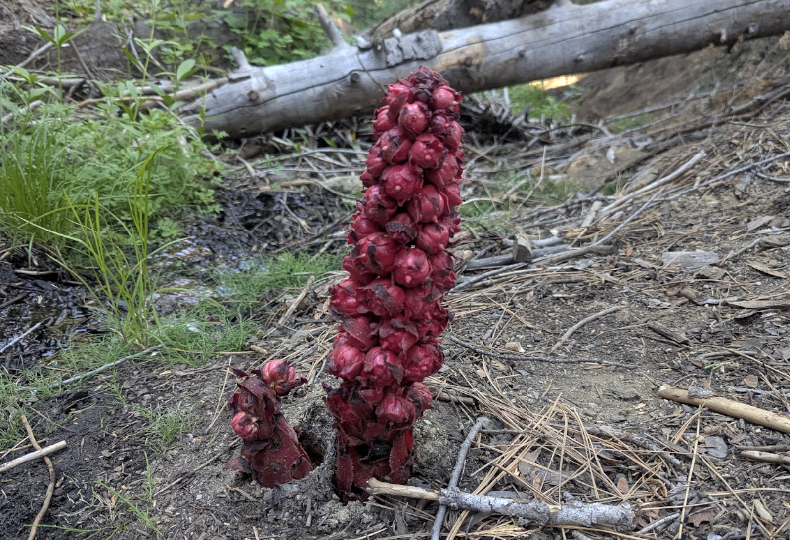
We finally arrived at Lower Tent Meadow, gasping for breath. At the campsite, some folks had already set up their tents. As they told us, they had made it up to Granite Pass, but turned back because of altitude sickness (ouch.) These would be the only people we would see until the JMT junction. We made camp and cooked dinner, our traditional first-night ramen. Elaine initially had trouble igniting the lighter, and although Jer had no problem with it, this portended trouble ahead…
While cleaning up, one of the other hikers noticed someone spying on us from 40 feet up:
His mother, who looked the size of a small grizzly more than a black bear, was rooting around at the base of the tree. The four of us looked on with a mixture of awe and fear. Eventually the cub climbed down and they went on their way, she lumbering, he capering.
The first night in the backcountry is always a little unnerving. Jer slept fitfully that night, wondering if our single smartwater bottle (our only way of filtering water) would crack early on, whether he had actually put all the scented items in the bear box, whether the bears would come back to check us out, etc…
Day 1: Granite Pass8.75 miles

The following morning, we ate our oatmeal and packed up our tent at a leisurely place. Although the climb was unrelenting with thinning air and endless switchbacks, the wind seemed to be on our side. Mornings were consistently the best time to hike, with well-rested bodies, cool temperatures, and dawn light teeming with latent magic. On the way up we encountered a number of adorably round and feathery sooty grouse, some of which were quite large and gave us as much of a scare as we gave them.
After what felt like a whole day in and of itself, we reached the top of the ridge (“the Lip”) around 11AM. Here, we enjoyed views of our next stop, the Granite Pass basin, as well as many tall peaks and puffy clouds in the distance.

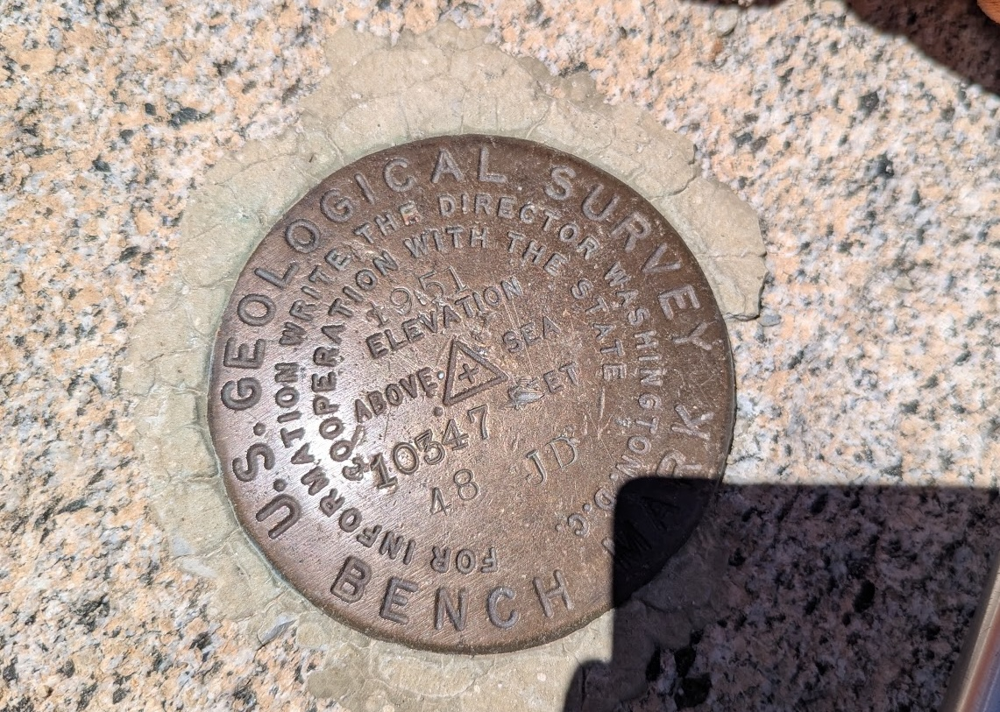
After a snack break, we began a mild descent into the Granite Pass basin and eventually towards the pass itself. Although this would be the first (and by far the easiest) mountain pass of our trek, the trail seemed to be playing some tricks on us. Consider this rather Sysiphean rock formation, for example:
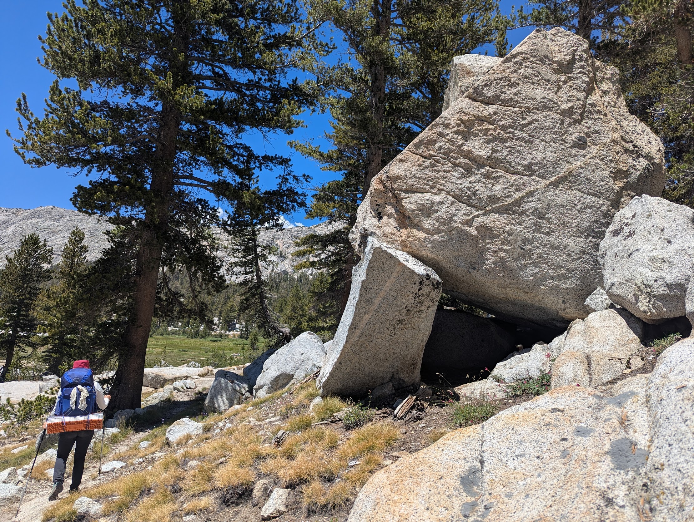
Days in the Sierras can take on a Sisyphean quality. Every climb up inevitably results in a descent down. If there is a seemingly flat section on the map, it should be expected to be a mosquito warzone. Alas, how brutally accurate a metaphor for life.
Reaching the top of the pass, we were weary from the day’s climbs, and pondering our life choices.
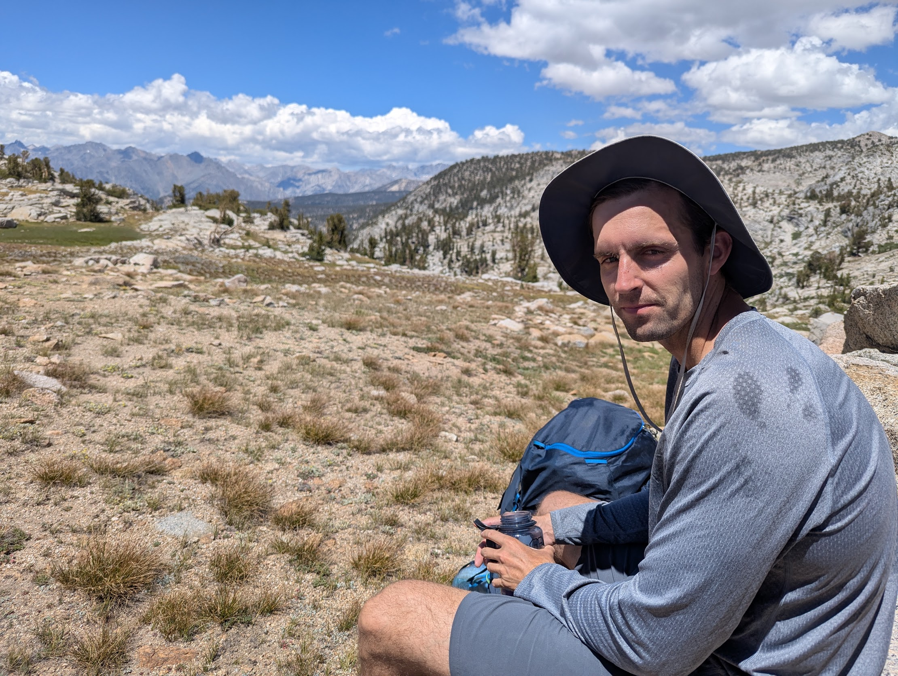
Elaine was apparently in better spirits, though perhaps a bit disoriented from the climb:
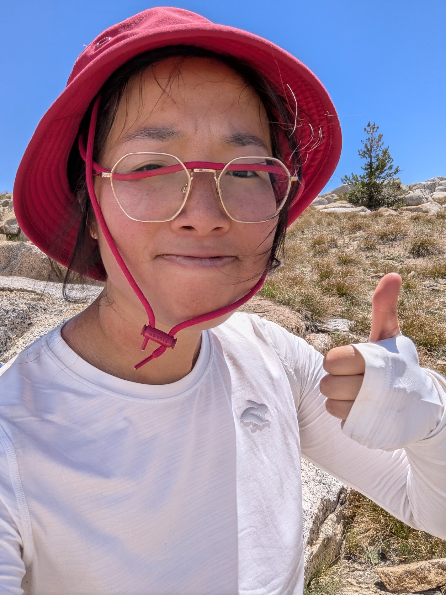
In any case, nothing a little chef’s special can’t fix (served on a priceless granite countertop as well!)
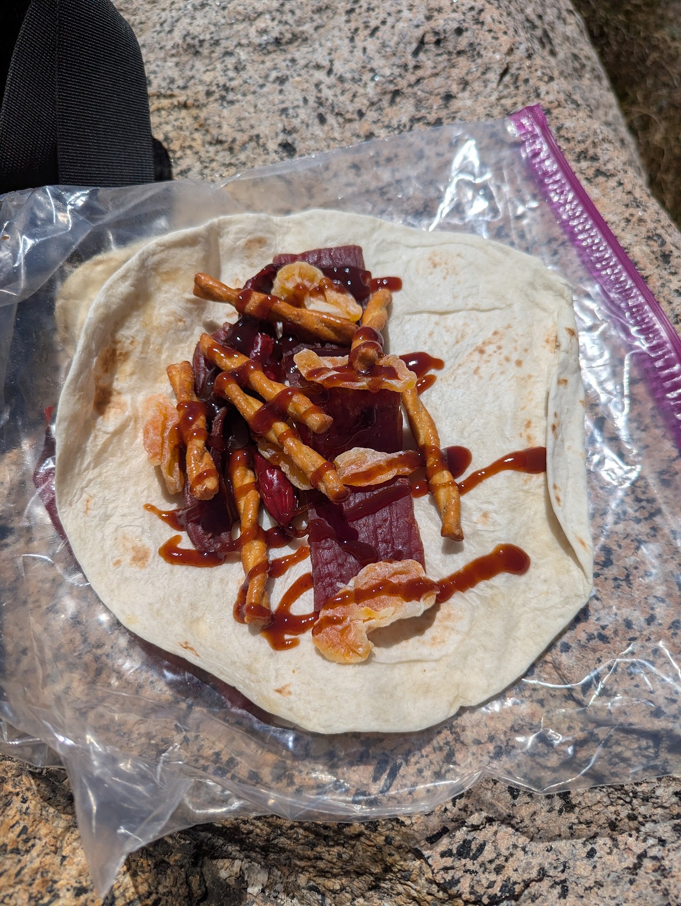
The rest of the day passed more or less as in a dream. The picturesque basin was filled with flowers, and the trail wandered between high alpine meadows, and grassy wet marshes. In fact the water which we filtered from one of those streams tasted beguilingly like flower petals. We ended the day in good spirits, and set up camp near an area known as Shorty’s meadow.
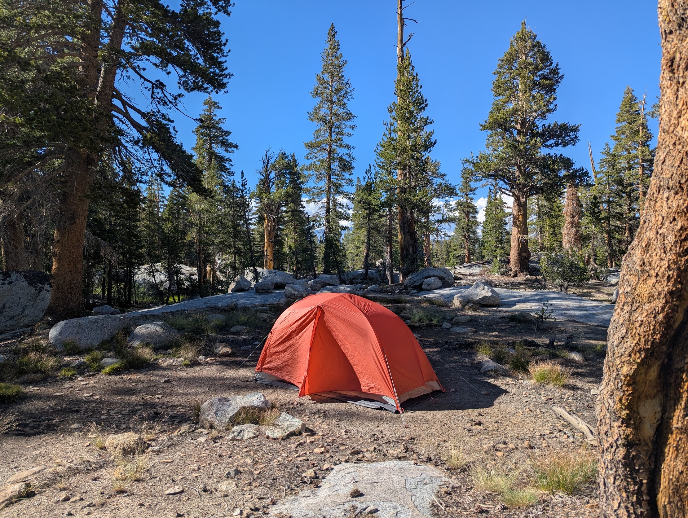
After spending nearly 12 hours on our feet, we were greatly looking forward to the prospect of a warm and hearty dinner. Imagine our despair, therefore, when we discovered our lighter no longer produced a flame! Uh-oh, uh-oh, uh-oh! Jer spent some time trying to macgyver the lighter into the submission and then trying to remember “how the primitive technology guy on YouTube makes fire by rolling sticks.” Sadly, these efforts were to no avail. Our spirits were crushed, as were our prospects of a hot dinner that night. We sent some panicked texts to Jer's family on the Zoleo and thought despondently about the logistics about hiking back.
After wasting nearly our whole satellite messaging quota, we realized we could very easily cold soak our meals and, although they would not provide the same kind of comfort as a hot MRE, they would provide just the same nutrients and calories. We experimentally cold-soaked a Backpacker's Pantry lasagna dinner, declared it surprisingly edible after forty minutes or so, and padded our empty stomachs with some other dry snacks. We lay down to sleep that night, mentally preparing for a week of cold food.
Day 2: “The Bitch”10.2 miles

In the morning we cold-soaked some oatmeal and forced it down. The day began much in the same pleasant fashion as the previous afternoon, with wanderings through lush meadows and sparse pine forests, with only mild hills and ridges to tire our legs. However, a vast stealth force of mosquitoes was laying in wait in the tall reeds and grass surrounding the still waters at the bottom of the shallow valley in the State Lakes area.
The relentlessness of the mosquitoes caused us to speed past our final water source without filtering additional water beyond the scant liter or so we were carrying. Before we knew it, we found ourselves atop a dry and sandy hill sitting itself atop a much larger and more precipitous mountainside than we could have ever imagined. Here ended the Copper Creek trail, and started the trail generally and fondly named on most maps as "The Bitch."
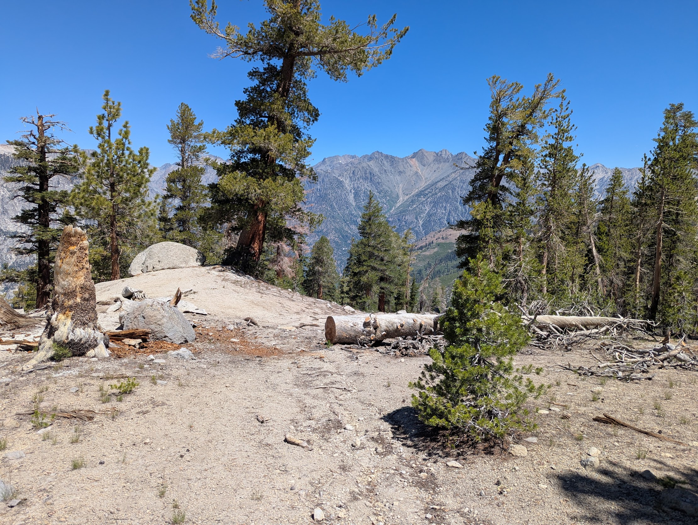
It takes a lot for a trail to earn such a ignominious name in these parts. "The Bitch" is a 5-mile stretch which drops some 4,000 feet in a rather violent fashion. Endless, ungraded and unmaintained, it is little more than a glorified water runoff channel. We were forced to stuff our feet on a vertiginously steep grade while usually not even able to see what was underfoot (usually, loose rocks from past runoff, slippery little pinecones, or other awkward and uneven objects.) The bottom seemed to get further away with every step. Meanwhile, the trail seemed to be doing everything it could to make us lose our nerve or balance. The vertigo of the descent, the sun exposure, the thick covering of oak leaves and rubble, the washouts, and rising temperatures all seemed to be conspiring to bring us down.
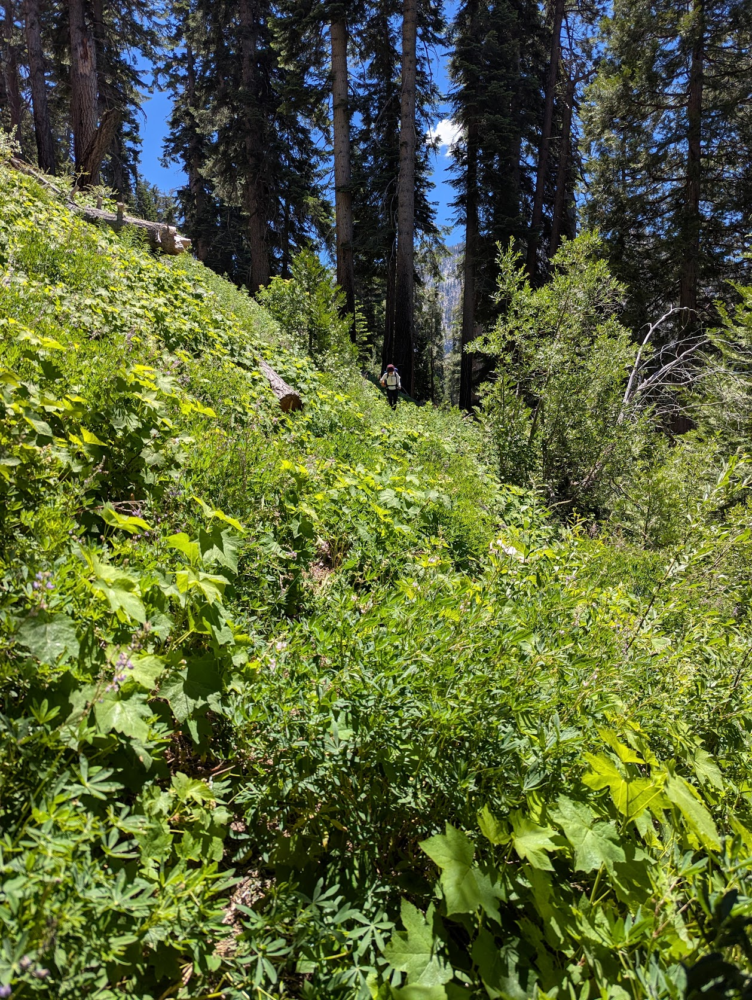
Combine all of this with our low-to-begin-with water reserves, and you can see how this was to make for the perfect afternoon of casual hiking into an area we would later be told by a local ranger was “the place where we have by far the most unresolved missing person cases in the park.” Infuriatingly, as we neared the bottom of the trail, we began to hear what seemed to be a river. It remained stubbornly out of sight, causing at least one of us to spiral into believing that we were dying from heatstroke and dehydration and having hallucinations at death's door.
Nonetheless, after many long hours of fear, anger, and tears, we made it to the bottom: Simpson Meadow.
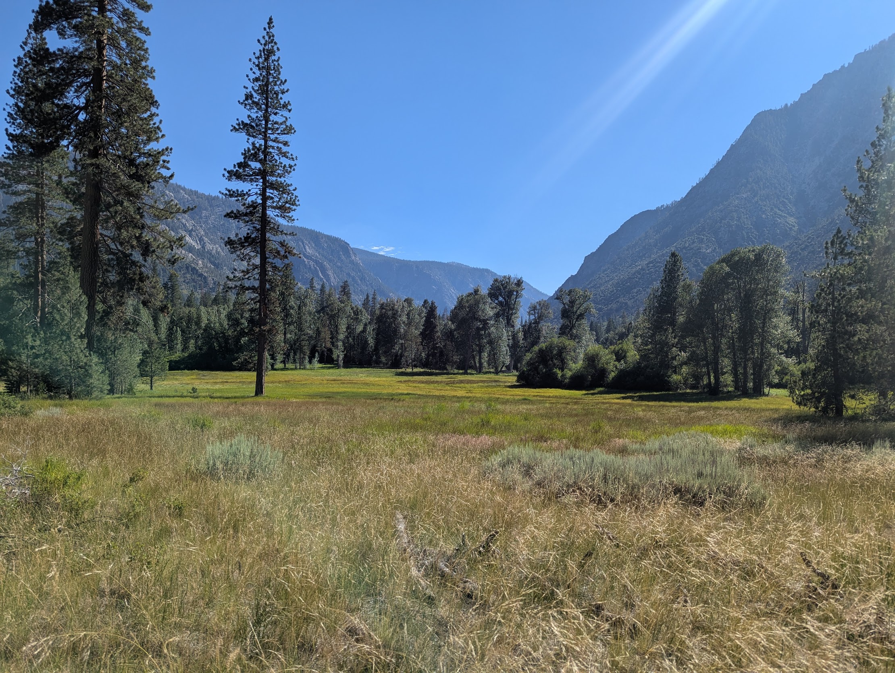
As we finally spilled out onto the hot and dry meadow, Elaine collapsed under a tree and Jer valiantly went to investigate the river to hopefully find some of the water which we could hear but not see. He threw off his pack, wandered off into the woods and climbed a few walls of rock to get to the river running nearby – but boy did that aqua vitae taste glorious.
Elaine changed into shorts as it was very hot down in the meadow, but this proved to be a mistake, owing to ongoing poor trail conditions. We continued to battle our way through various vegetal unmentionables that scratched up our legs and also caused an additional nuisance of sneezes and runny noses. We made it another mile or two before deciding to call it a day around 5pm. There seemed to be no established campsites in the meadow, so we ended up making camp in an awkward not-entirely-flat patch of dirt near the trail with some sketchy access to the Middle Fork (requiring a slide down a steep hill to the riverbed and passage through some overgrowth.) It was worth it for Jer, who stripped down, rinsed his clothes, and gingerly waded in, slipping and falling multiple times on the large and smooth riverbed rocks. The river felt wonderful after such a long, hot and stressful day fighting the Bitch.
The day yielded one happy surprise: Our lighter had come back to life! It seemed that the ignition mechanism had struggled (like us) in the thin oxygen of the high mountain air. Having returned to around 6,000 feet, it was sparking up just fine. We also made the excellent decision to try one of our Peak Fuel brand ''beef pasta marinara'' backpacker dinners, which turned out to be the runaway favorite of the dinners we bought for the trip. The day was at least partially redeemed.
Day 3: Devil’s Washbowl8.52 miles

The next day, we set out to follow the Middle Fork Kings River trail up the canyon. The trail is often referred to by a particular landmark along the way: The Devil’s Washbowl.
To get to this charming bit of satanic plumbing, however, we had to first hike to the end of Simpson Meadow. Despite the allegedly flat elevation profile, the plethora of downed trees and thick vegetation meant that we could go hardly 30 seconds before running into some new obstacle. After an hour or so of slow progress, we entered a hot and exposed sagebrush area. The path was faint here, and we relied heavily on footprints to guide us. We took this part quickly, wanting to get out of the sun and knowing that the bigger challenge lay ahead.
We were very happy indeed to run into the Cartridge Creek bridge in the mid-morning (where we saw an incredibly fluorescent Western Tanager!) It was relieving and reassuring to discover such a sturdy a bridge in the backcountry, especially after two days of total loneliness. Think about it this way: Some years ago, someone decided that it was worth the money and effort to make sure we could get across this way safely today. This particular bridge seemed like it had seen some challenges. While one of the wooden railings wasn't doing so well, the stone base was very sturdy and the bridge was altogether standing strong.
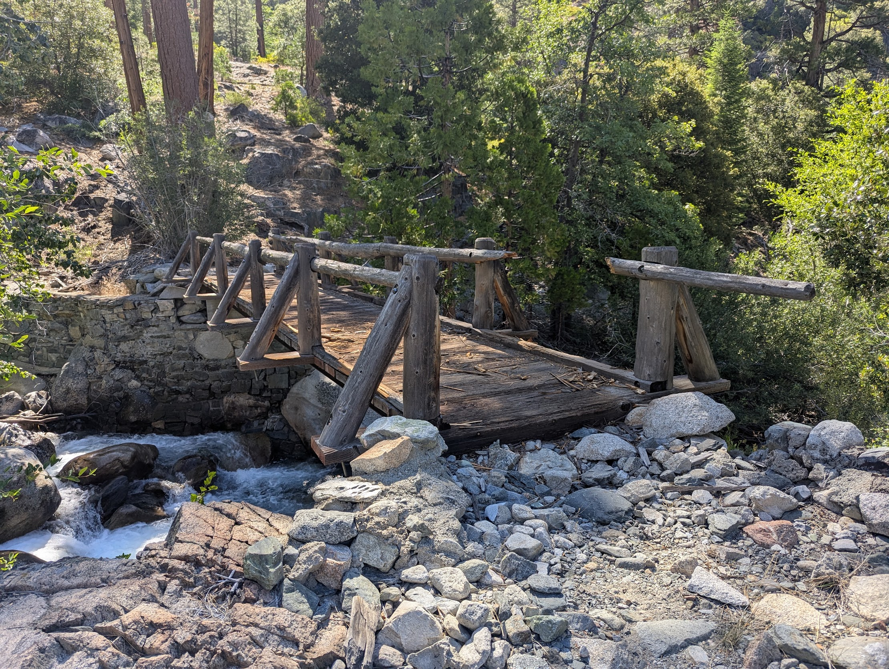
Unfortunately, as soon as we passed the bridge and a mysteriously nice-looking campsite (fit with granite benches), the trail promptly disappeared. Despite Jer's wayfinding abilities and our three maps (one paper and two digital), we could not find the trail at all. For some thirty minutes, we bushwhacked back and forth desperately scrutinizing the forest floor for something resembling a footpath. This was a task akin to crawling around in a haystack looking for a needle.
Thankfully, there are only two ways to go in a steep canyon: up, or down. We knew we had to go up, so we persisted through the densely thicketed underbrush. After what felt like an eternity of circling, we saw the trail right in front of us, casually curving along the pine-needle forest floor as if nothing had ever happened. Bastard.
Soon afterwards, the woods receded to granite cliff walls, and we found ourselves following the Middle Fork of the Kings River up the canyon. The scenery in this section was, admittedly, breathtaking. The Devil's Washbowl is aptly named, as it resembles nothing so much as a titanic, granite toilet bowl with water flushing in vertical aquamarine torrents. The river flows down this entire canyon in steps, and at the bottom of each "step" (in reality, each enormous cataract) the water fills into beautiful, crystal clear pools – creating “washbowls.”
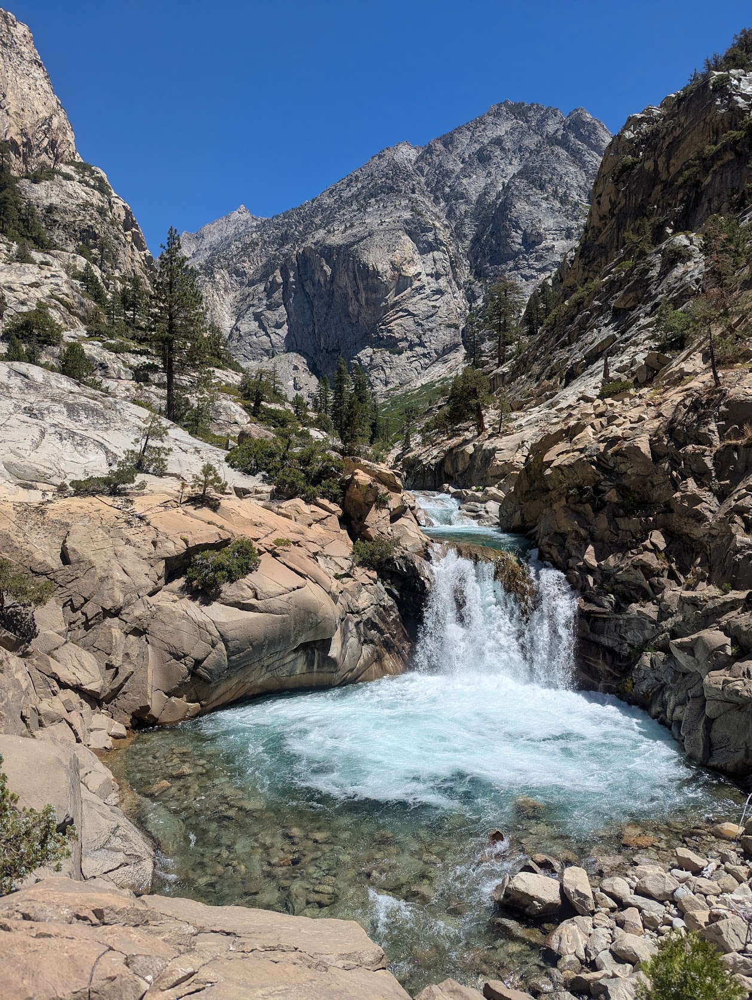
It seemed, unfortunately, like the Devil had been at this particular trail. While there was a visible trail (thankfully), it remained perilously strewn with granite debris from years of avalanches and rockslides, or otherwise wholly overgrown with young trees, manzanita, and prickly mountain whitethorns. Navigating these obstacles was especially perilous now as the way forward had become an exposed, single-foot-wide ledge along the cliff-like river walls.
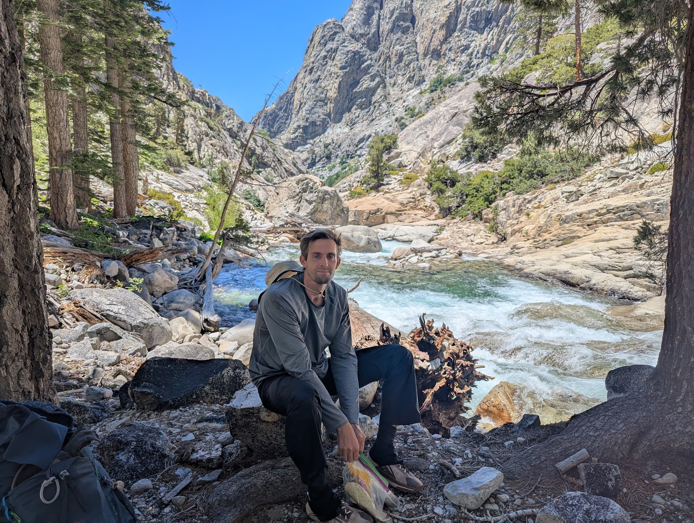
After a pleasant snack and hydration break, we climbed up...
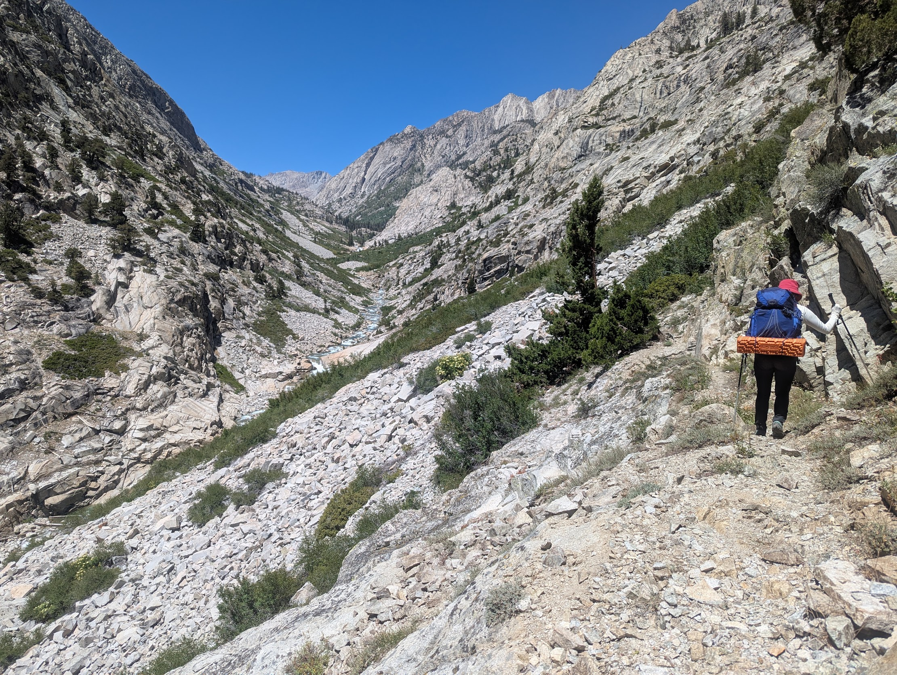
And up...
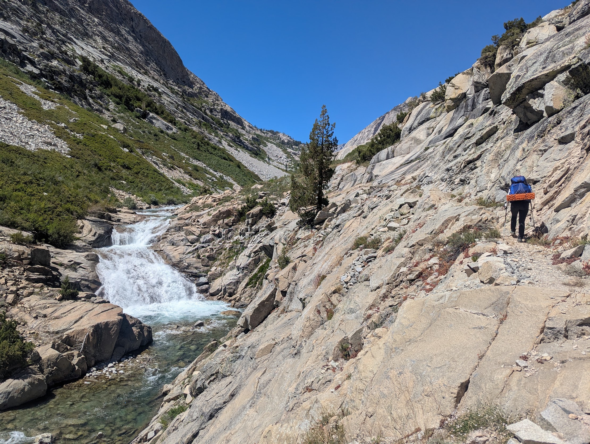
… until the climb finally tapered off and we found ourselves reentering the woods at a much higher elevation than where we started. At this point on the trail, the Palisade Creek combines with the Middle Fork Kings River (which we had been hiking parallel to all day). Gloriously, our paths were also about to merge onto the well-traveled JMT/PCT, with its miles of clean, well-graded, and clean-marked trail.
However, there was one challenge left in store. The Palisade Creek is more like a river at this point, and given that the bridge that had once spanned it had washed out years ago, the only way to cross was by fording it. Sierra rivers, which are fed from high mountain snowmelt, are usually lowest and safest to cross in the morning after the watersheds refreeze overnight. But we had reached the creek at mid-afternoon, at peak flow, and the place where the trail submerged looked far too dangerous to cross. We followed the creek off trail, bushwhacking briefly until we found a place where it seemed we could ford more easily. The water still came up to thigh-level, and the current was strong, but with our poles firmly planted before each step we made our way through. We came running to the John Muir Trail junction like children to presents under a Christmas tree.
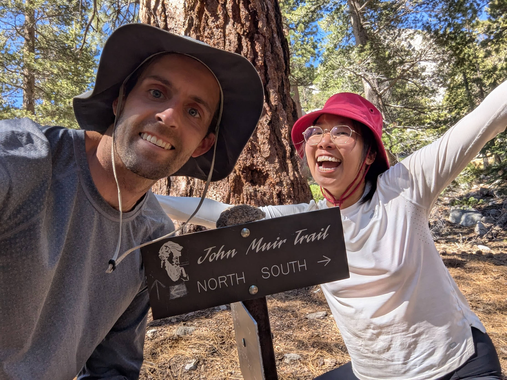
Never had we felt so much appreciation for a well-maintained and well-traveled trail as after those two days of struggling through remote wilderness rarely visited (let alone maintained by) park rangers.
The day ended on a high note. While Jer had a much-deserved extended sit-down on a nearby rock, Elaine went and asked a passing PCT hiker if he had, by some chance, an extra lighter. He didn't, but he had something almost as good: A box of dry matches! (He was cold-soaking his meals, being stronger than than the likes of us who needed hot meals, and thus had little need for backup sources of fire.)
We were so relieved and excited that we were able to make our way for another mile or so at a good clip, before our adrenaline gave out and we collapsed onto a campsite. We took care not to pitch our tent under one particularly enormous tree nearby that was occasionally dropping gargantuan pinecones which impacted the ground with sounds like small bombs.

Day 4: The Golden Staircase and Mather Pass12.2 miles

Now that we were on the JMT, the going would be much more straightforward. Straightforward does not mean easy, however: The JMT’s distinctive feature is that its route taps the watersheds of all the region’s major rivers. These rivers originate in pure and unpolluted alpine basins, ensconced by the rims of some of the continental US’s tallest mountains. Therefore, the trail takes on a particular pattern: climb to basin, then to pass, descend to basin, descend to river, and repeat.
The previous evening, while we collected water and washed off in the Palisade Creek, a passing hiker asked where we were headed.
“Southbound from here,” Jer said.
“Oh, well, you’ve got quite a climb ahead of you. Happy trails!” She said in a chipper tone, and continued on her way northbound, which was by far the most common direction we saw people hiking. She was pretty geared up, most likely a JMT thru-hiker.
Our goal for the day was the 12,200-foot Mather Pass, whose northern basin hosts the Palisade Lakes, which feed the Palisade Creek and ultimately the Middle Fork of the Kings River. Despite knowing we'd have to gain some 3,800 feet that day (on the heels of the 2,500 foot Middle Fork climb yesterday) the pleasant nature of the trail and the joy of seeing other humans kept our energy high.
We pushed up the Golden Staircase – an awesome and rugged section of trail featuring large steps adjacent to gushing waterfalls – with steady efforts, pausing briefly to chit-chat with the passing NOBO hikers.
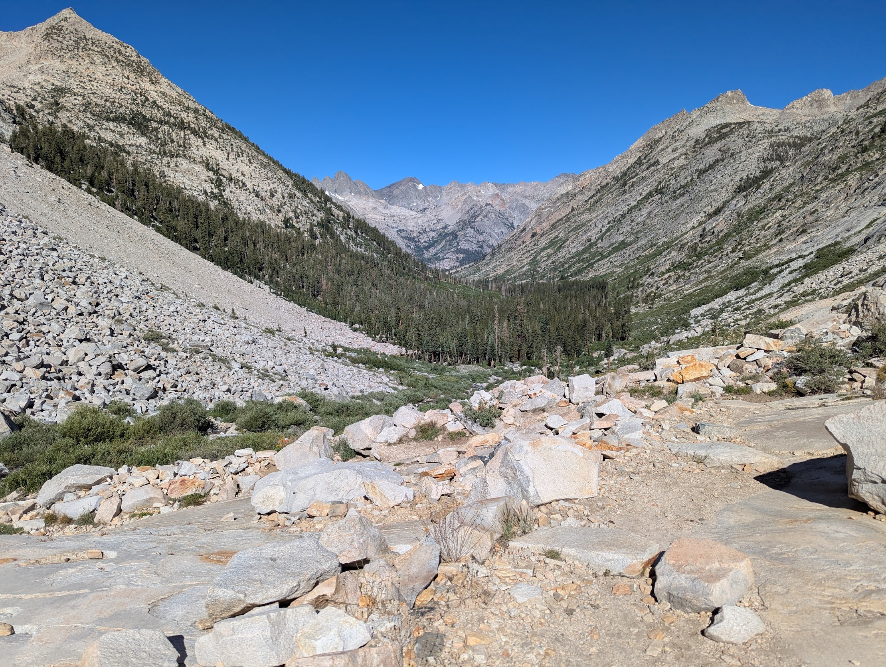
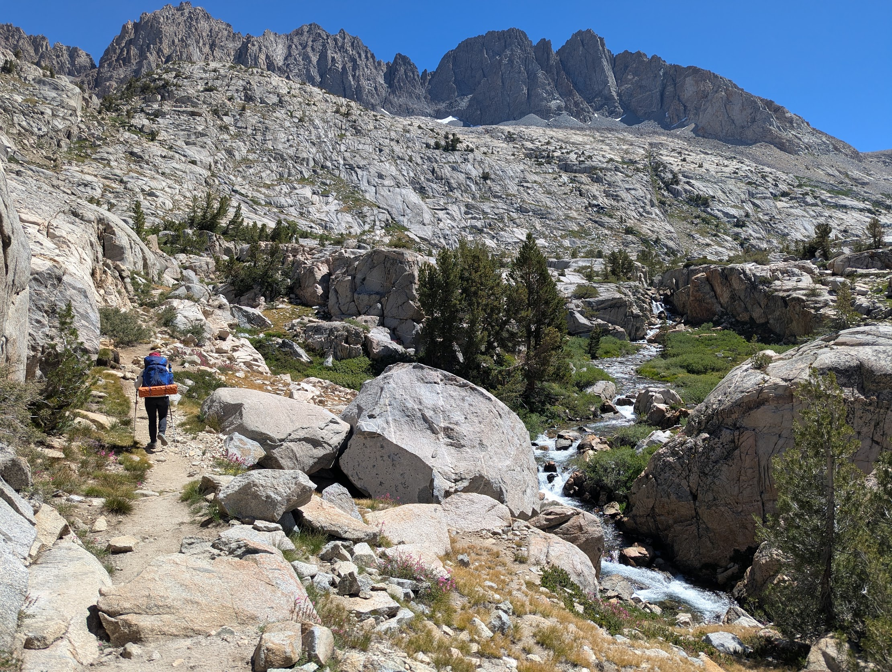
The hard initial climb was rewarded once we arrived at the high basin. The whole area was a marmot paradise, with the furry little buddies scurrying, relaxing, investigating, and otherwise seeming to live a joyous and edenic existence. We took refuge in one of the many enormous stone slabs dotting the basin and enjoyed the sight of the lakes and the clear mountain stream running flat over the granite.
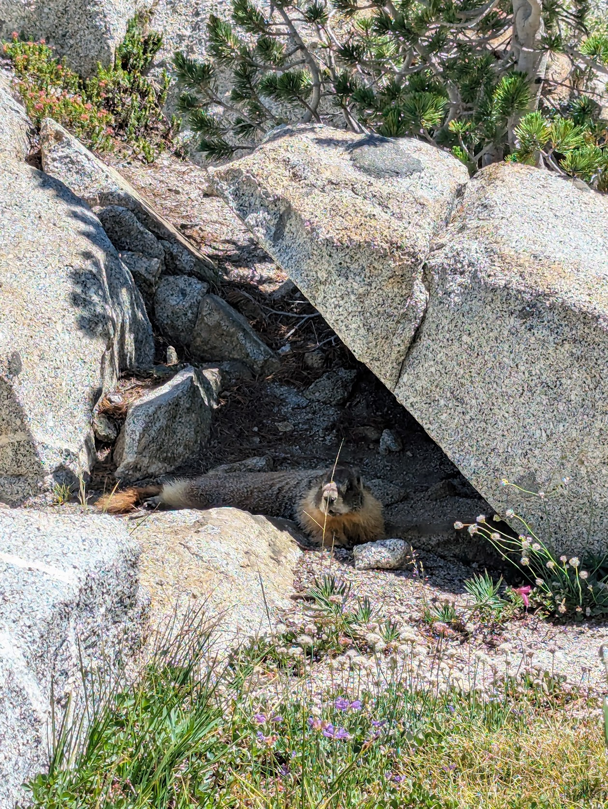
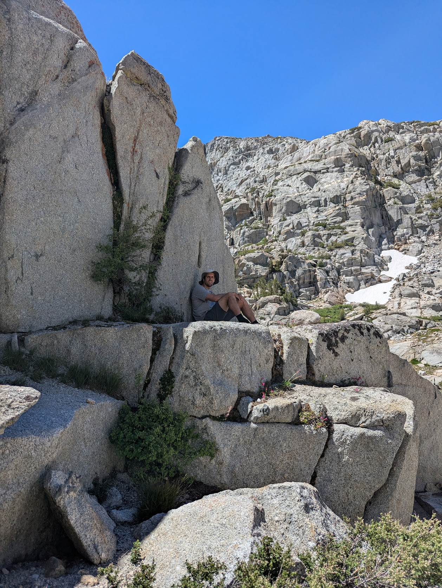
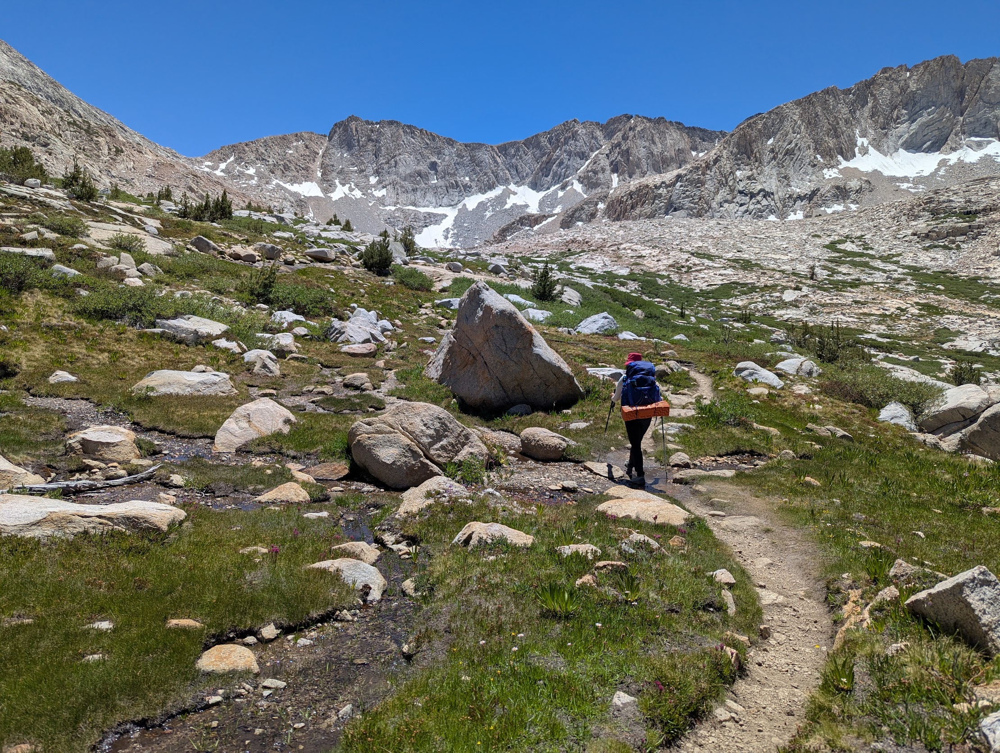
Past the basin and above the tree line, the landscape changes dramatically. The earth seems to take on a lunar aspect, the air thins, temperatures drop, and perceptions of sizes and distances become distorted in strange and unexpected ways. Everything looks simultaneously close and very far away. This effect, combined with the knowledge of the nearing pass, creates a tension between feeling as though the top is just a few steps away, or a few more miles away. After every switchback, there was always another, and instead of getting any closer, the rocks seemed only to be getting larger.
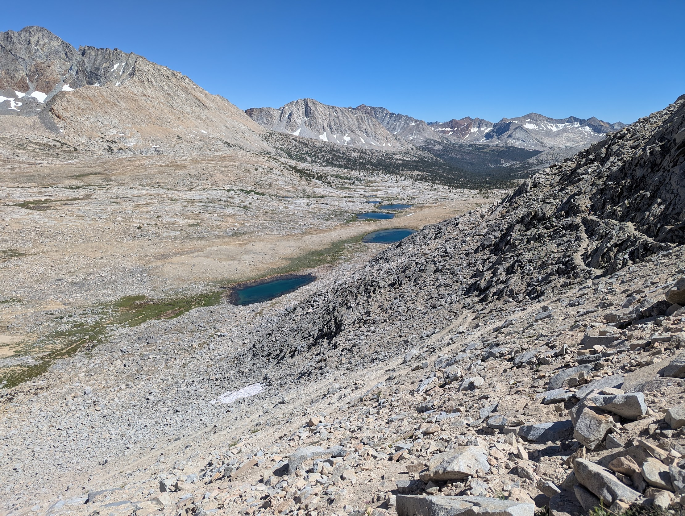
Nevertheless, with persistence and temporary suspension of conscious thought, we ultimately came out on the top: a saddle of crushed rock next to what seemed to be a fifty-foot-high pile of granite rubble. The rocky and strenuous final part of the climb was enough to make Elaine decide she did not want to hang around at the top very long, so she started down the other side relatively quickly.
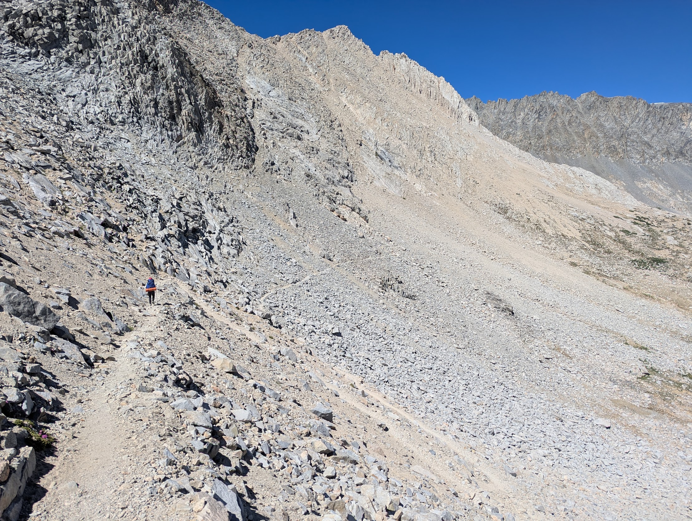
The JMT mountain passes are significantly easier to climb going one direction instead of the other. In this case, going SOBO (our direction) was much tougher than NOBO, which approaches from a high-elevation basin, making for a shorter climb. We descended quickly into this basin and took a break by the first lake we came to, just below the pass:
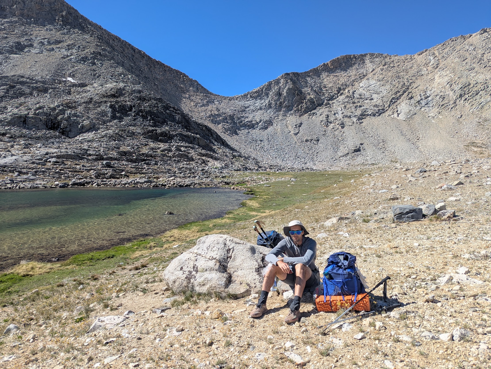
We went a little farther past this point to get out of the most wind-exposed area, and set up camp with beautiful views of the basin and the valley below. This was our highest elevation campsite, with a gently flowing creek over the granite nearby, and offered perhaps the grandest view of the Milky Way we have ever seen.
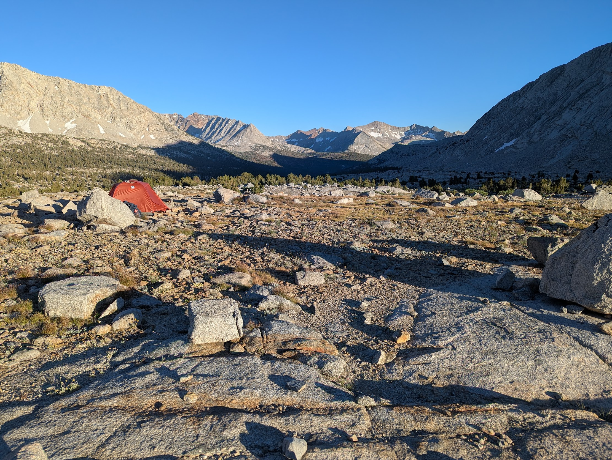

Day 5: Pinchot Pass15.0 miles

On Day 4, we had climbed nearly 4,000 feet. On Day 5 we knew we had only to descend an easy 2,000, climb 2,000 again back up to Pinchot Pass, and then descend gradually towards Woods Creek. Small potatoes compared to our previous days, right?
This kind of anticipation inevitably results in disappointment. A 2,000-ft climb at elevation will always be tough, and expecting it to be easy only makes it tougher. That morning Jer started feeling some pain in his lower back, in addition to his upper back being extremely stiff. Adding to the misery, Elaine had slept poorly the previous night in the thin and chilly air at our 11,000-foot campsite.
We descended to the valley at the midpoint between Mather and Pinchot Pass and climbed up the other side, hanging out with the marmots in the northern basin. Climbing up felt dreadful, and we were punishing ourselves for the easy expectations we developed that the morning.
The painful hike up Pinchot Pass caused us to question whether we would have to bail out early. In theory, if we made it to our goal for the end of the day, we would be camping at a trail junction with an option to head directly back to the parking lot, ending our trek a couple days ahead of schedule. As the day went on and Jer's back pain did not let up, this seemed like an increasing realistic and attractive option.
Of course, despite such mental battles, the views remained incredible throughout the climb.
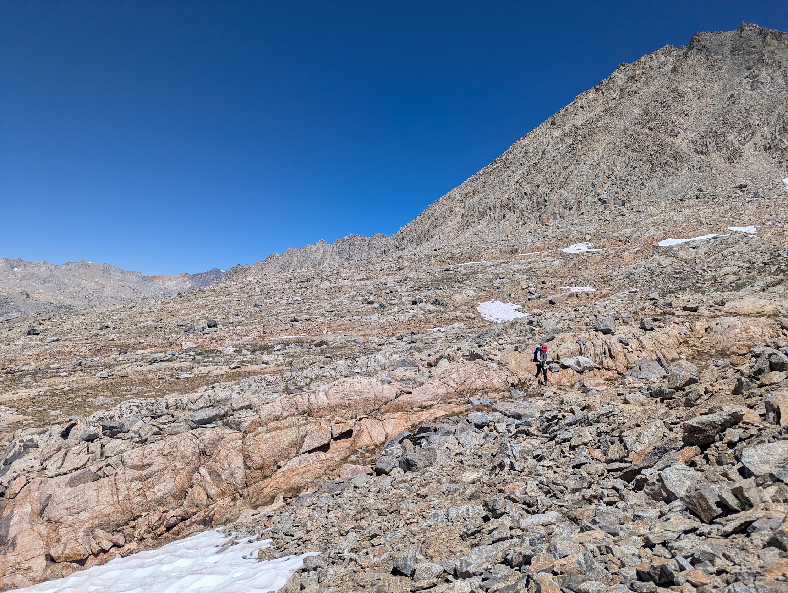
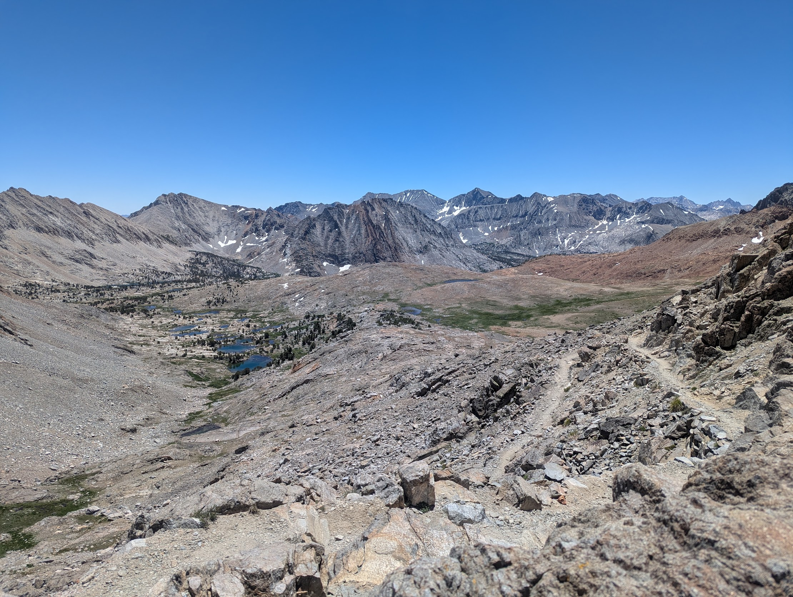
When we reached the very top, we were greeted by a mountain king marmot who had taken up residence at the crown of the pass.
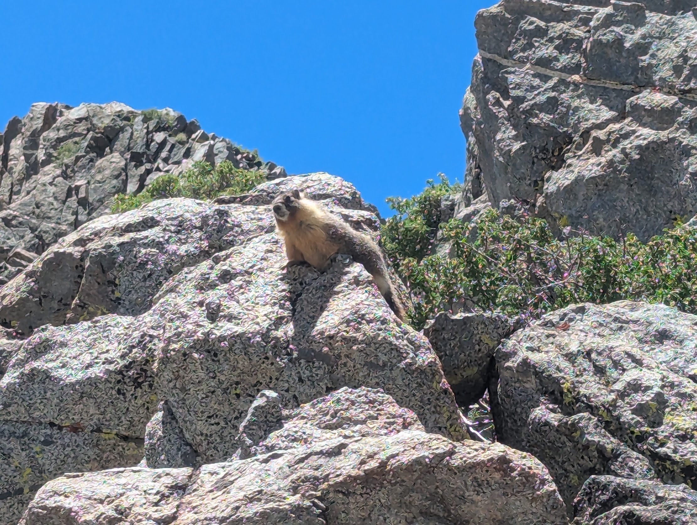
We reached the top at more or less the same time as a JMT hiker heading from the other direction. As he got close, he shouted out:
“THAT BLOWS!”
Upon reaching the top, he nearly collapsed on his poles beside to us. As we were to learn shortly, the climb up Pinchot from the opposite direction is significantly more brutal than from our side. “I swear, I was dissociating at some point; I was watching someone else hiking from inside my own body,” he described, making zombie-like motions of putting one trekking pole in front of the other.
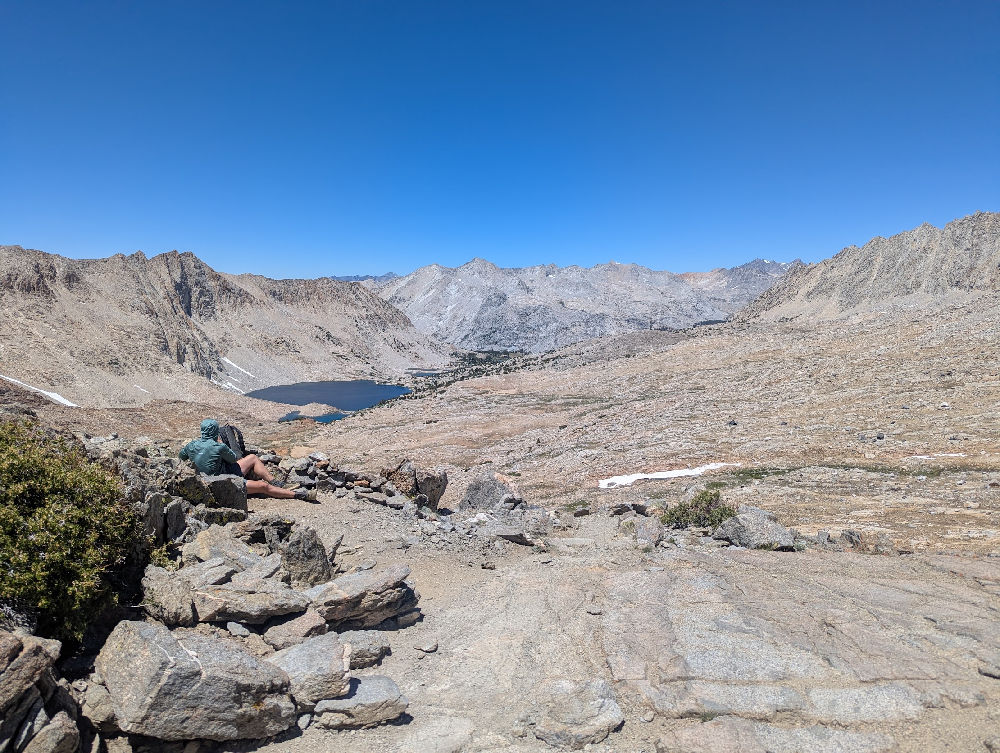
All the while, King Pinchot Marmot continued to hang out, probably thinking, “...yeah I remember the first time I climbed Pinchot...”
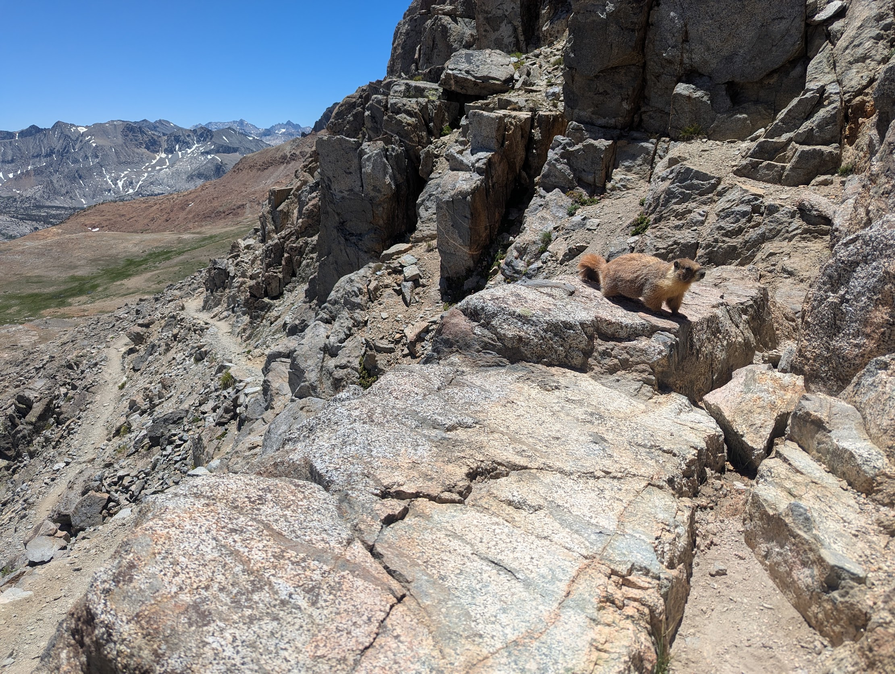
We hung out a bit longer, exchanging trail anecdotes, before we headed our separate ways.
We made it down the other side into the first basin, where we stopped once more to rest and ponder more seriously the advisability of an early exit. Jer’s back made the prospect of a third, harder mountain pass the next day seem unthinkable. We voiced our doubts out loud in a brief discussion which left us both feeling disappointed – it wouldn’t feel right to cut this trip short. But there was nothing to do in the moment but keep on hiking, as we were still some eight miles away from the Woods Creek junction. As with anything that must wait for the future, we had no choice but to continue on our way, taking things one step at a time.
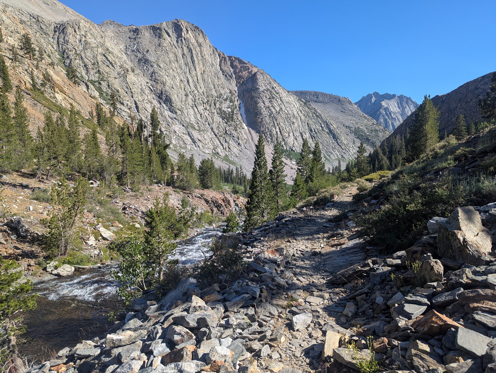
Not long thereafter, a godsend appeared: Mother nature’s call! As with cats which get the zoomies after a satisfying poop, so too did we experience a sudden and powerful revival of spirits afterward.
Prior to this revival of spirits, we agreed it was unlikely that we could make the full eight mile descent to the Woods Creek trail junction. But with our bodies and spirits a little bit lighter, it seemed like anything was possible. We sped down the trail at unprecedented speed. Would we make it before sunset? Unclear. We kept going.
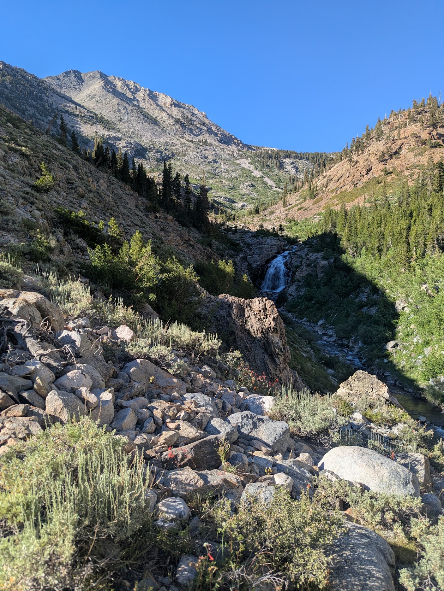
Near the bottom, around 6 pm, we came across a hiker who was seemingly just setting out on the climb out of Woods Creek, up towards Pinchot. He had a long way to go and less than two hours of daylight left, but was in contagiously high spirits. He turned to Jer with a smile as they stood near by the raging Wood Creek, and said,
“Man, doesn’t it look like you could ride some of these rapids like a waterslide?” He said, gesturing to the water as it covered large swathes of enormous, smooth boulders, raging down a rather steep portion of the river.
Jer raised his eyebrows and said, “Hmm, well… when you put it that way, I guess so…”
“But then I guess at the bottom there where the rocks jut back up, you’d probably break your back…”
“Indeed…”
“Looks pretty fun though anyway! Man, it’s just so beautiful out here! This is really just the best time to hike. It gets so hot during the day.”
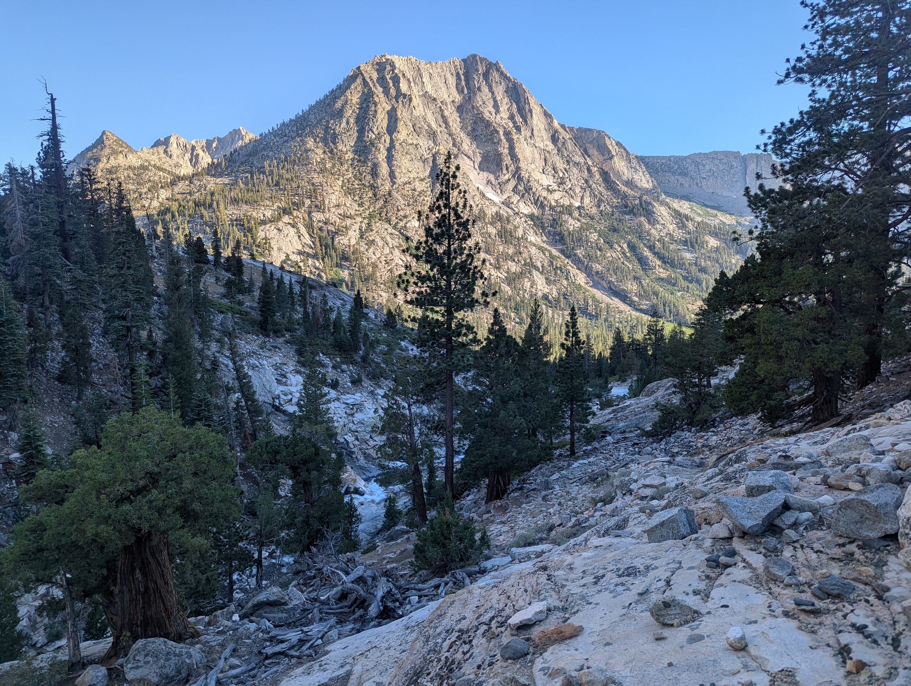
His pure joy about hiking so late in the day was truly infectious. We asked him how far he was planning on going, and he shrugged his shoulders. “Just a little ways up, I guess.” Knowing the ways of hikers in these parts, this could mean a quarter mile or 10.
An ongoing source of stress was the fact that the suspension bridge which marked the bottom was staying stubbornly out of sight. Even once passing hikers assured us that it could be no more than a quarter-mile away, the bridge was nowhere to be seen. As we continued to push forward, we began to wonder just how many more miles there were to go before we could sleep.
As it turns out, this particular bridge enjoys a bit of concealment and is impossible to see higher up the trail. Thus, around sundown, we were somewhat unexpectedly confronted with the sight of a remarkably well-executed suspension bridge. We immediately understood why hikers tend to have a little bit too much fun with it ("careful, you can slide on that thing..." some NOBOs had told us earlier that afternoon.)
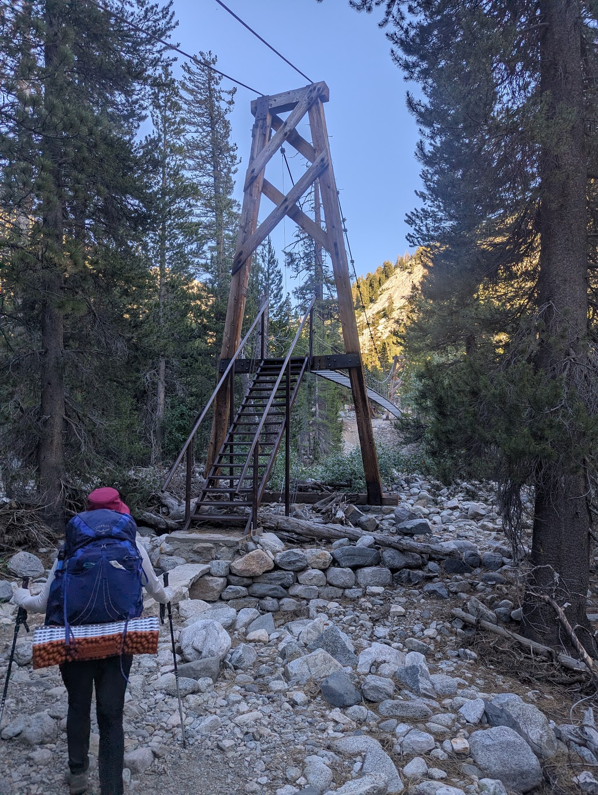
Being a suspension bridge (with a strict one-person-at-a-time rule), it twists and turns and bounces as you walk over it. Elaine was terrified by the experience (“a frankly terrifying contraption which is little more than some steel cables surrounding a gangplank 50 feet above a roaring river”) while Jer spent ample time indulging in the excitation of its rich eigenmode structure during his own turn.
Reaching the bridge also meant a node in our decision tree. We now had an opportunity to turn off the JMT and hike back down to our car the next day. Or, we could continue onward, meaning one more mountain pass the next day, and then the return to the car the day after.
For whatever reason, the eight-mile descent down to this bridge seemed to have had a healing effect on Jer’s back. This fact, a hot dinner, and the recollection of various hikers earlier that day who seemed to be in worse condition than us, made us realize that things weren’t so bad. We were also loath to miss out on getting to see Rae Lakes, one of the most popular sights in the Sierras. After tentatively deciding to stick to the plan, we crashed hard that night, having completed our longest day – 15 miles.
Day 6: Rae Lakes and Glen Pass12.94 miles

Jer had managed to ease his back pain overnight by padding it with his puffer, and we remained warily confident that the original plan was doable. It was still an ambitious itinerary, however, with major mileage both days and a big climb today.
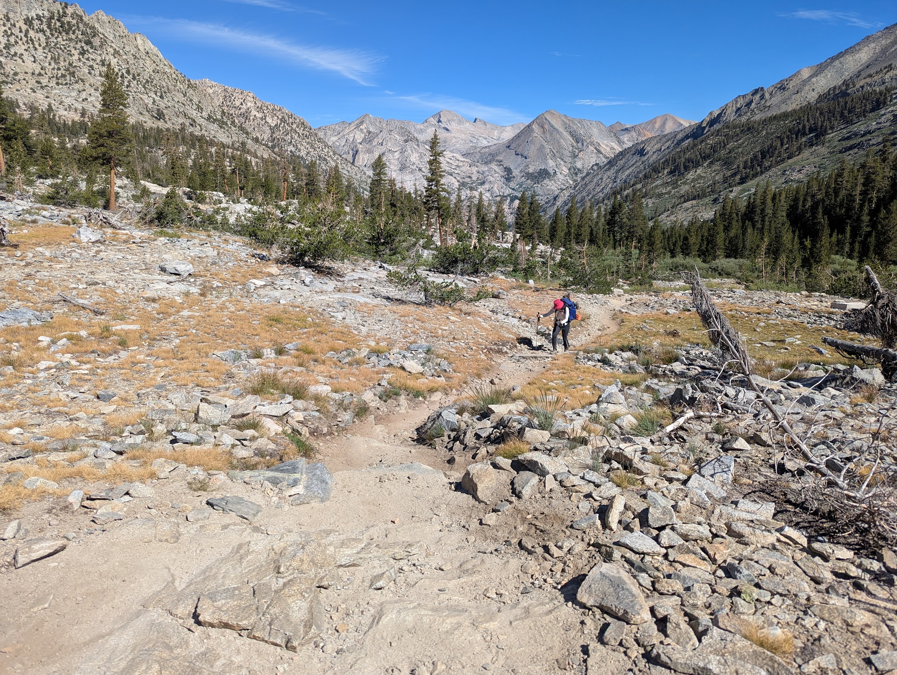
As we started, we felt like we were embarking on the final leg of what had been quite the adventure. With the end in sight, the intermittent thoughts of the outside world and its accompanying minor concerns – previously quashed by more urgent sources of struggle and pain – seemed to rise again from the depths.
That morning we chatted with the two friends who had also stayed at the suspension bridge campground last night, Hallie and Jonathan, doing the Rae Lakes loop. Hallie had done the PCT in 2016 and they proved to be strong and fast hikers. By that point we were used to the routine of climbing and took the trail at our normal pace, leapfrogging with Hallie and Jonathan all morning. We also passed a number of hikers coming down, some with fishing gear, and others looking somewhat overwhelmed. The Rae Lakes loop is a popular shorter backpacking trip out of Road’s End, which brings many to enjoy nature (or test out backpacking for the first time) in a somewhat more bite-sized chunk.
First we came up to Dollar Lake.
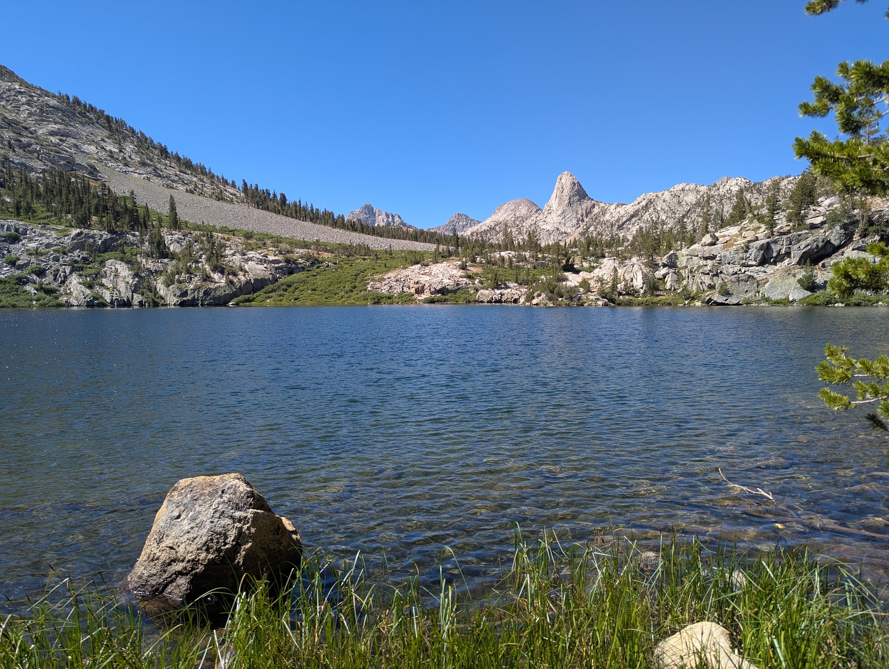
Followed by Arrowhead:
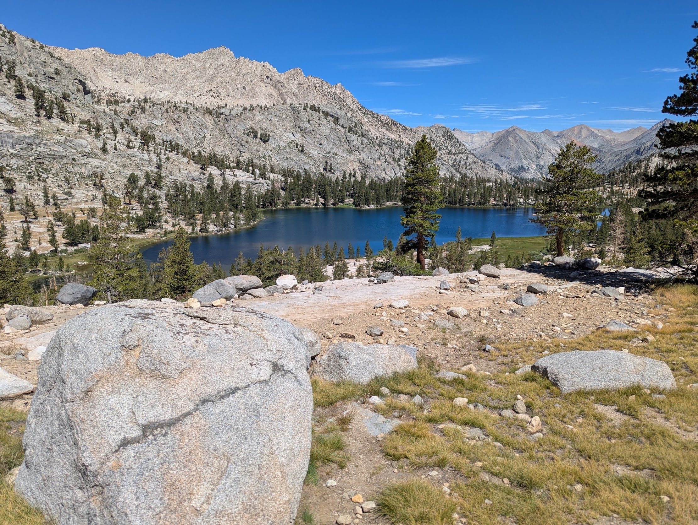
And then we made it to the main Rae Lakes area, a series of beautiful alpine lakes beneath the "Painted Lady" and her fellow granite domes and spires. As we stopped by the first lake, we encountered an adorable quartet of baby marmots who kept us, Jonathan, and Hallie very entertained.
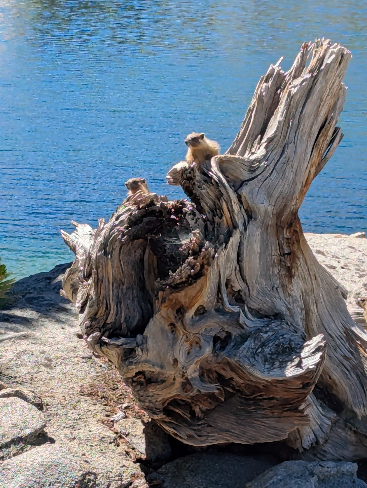
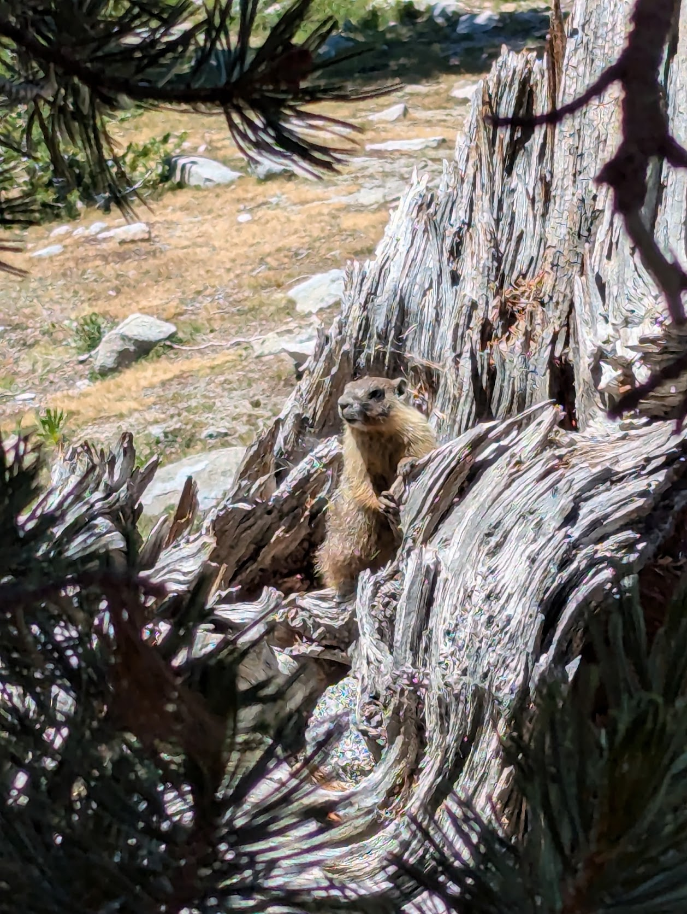
While Elaine and the others hiked ahead, Jer stayed behind for a longer break. At this point we had adapted to our different hiking styles (Elaine hikes slow and takes short breaks, Jer hikes fast and takes long breaks), with Elaine often going ahead initially and Jer catching up after a longer rest.
Not long after the others had left, however, Jer saw, to his great surprise, a wet, brown (colored) bear cub, of a kind of adolescent size, apparently fresh out of the lake and wandering down the trail not 15 feet away. The cub looked at Jer quite unbothered, while Jer stood frozen to the spot, waiting for a mother bear to appear and obliterate him at any moment. Happily, no such thing happened, the cub ambled nonchalantly away and both were left unharmed.
Jer watched this all take place in awe before swiftly grabbing his things and bolting down the trail to catch up to the others. He gleefully told every hiker he passed going in the other direction of the bear, most of whom seemed rather disturbed. Black bear encounters are usually safe, as long as the bears know you are there and you don’t come between a mother and her cub. Unfortunately, in more popular areas of the Sierras, some bears have become quite cavalier about stealing human food (and sometimes human packs and other essentials), causing problems for humans and bears alike. Happily, this particular cub just seemed to be sharing in the splendor of that idyllic basin with the rest of us, and expressed no interest in raiding Jer's pack for week-old snacks.
The lakeshore presented a perfect opportunity for an extended lunch break and swim. We stripped down, washed and cooled off, and nibbled a very relaxed lunch of stale tortillas and dried fruit under the fast-moving cirrus clouds.

We then had to marshal ourselves for the ascent to Glen Pass. As it turned out, this last mountain pass would be one of the steepest and most grueling. Although (marginally) lower in elevation than our previous two passes, the final approach is particularly steep and rocky.
First we ascended above the Lakes, where we passed by a particularly hippyish PCTer who seemed to be in heading down in a good mood.
“Are there good places to jump off rocks into the lakes?” He asked.
“Yes indeed!”
“Right on!”
His buddy, however, seemed less spirited. Indeed, as we encountered more folks coming down from the pass, it became apparent that we were approaching something of a monster.
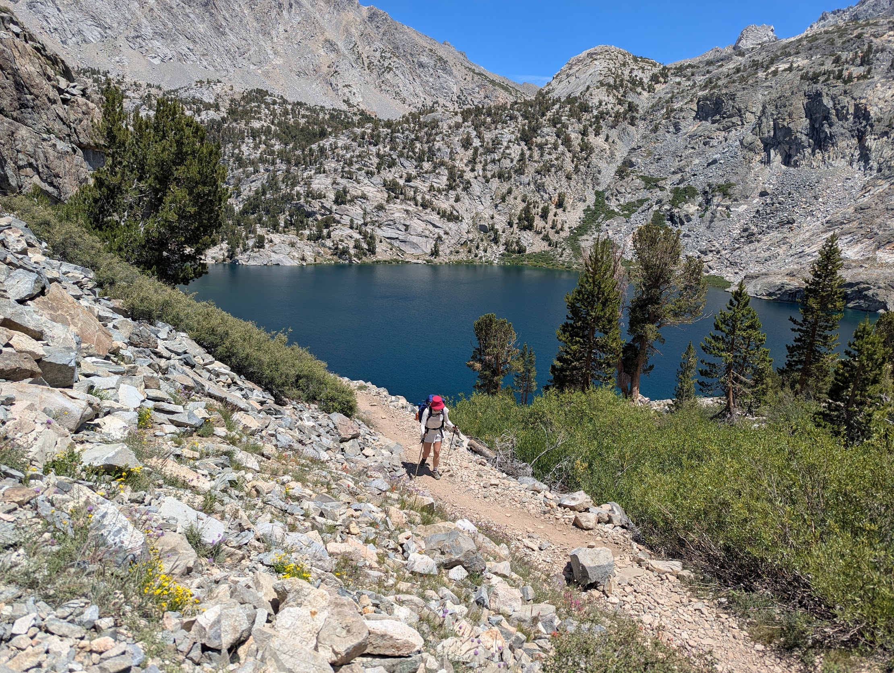
We climbed higher and higher, until we reached an unexpected second basin, devoid of trail, with the last lingering snowmelt lakes of the summer.
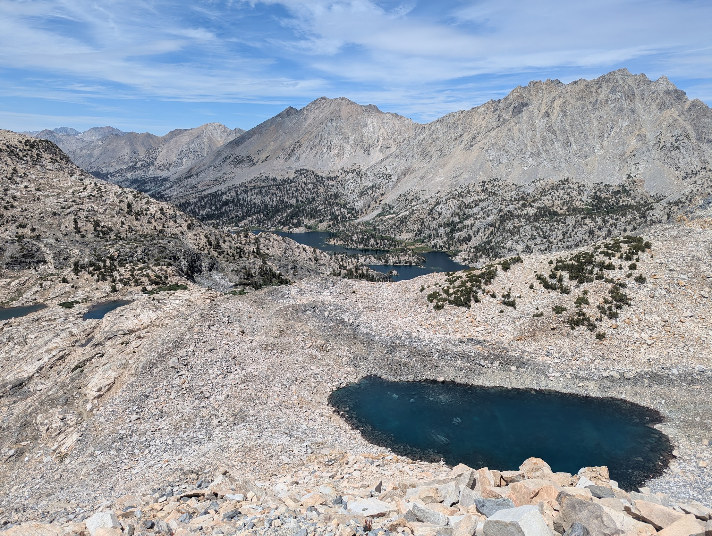
As we went higher still, the entire mountain seemed to turn into one enormous pile of huge boulders, like a solidified lava field.
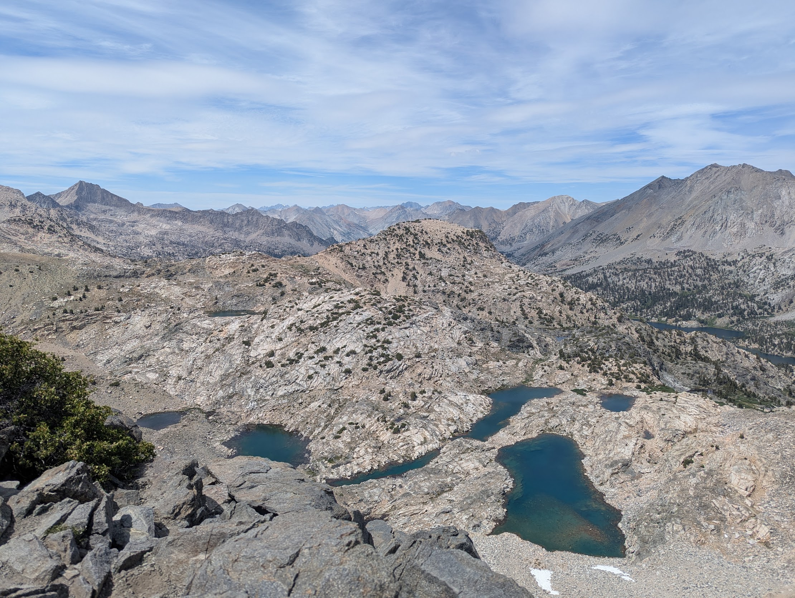
The air was thin and the climb was extremely steep and technical. We took it slow and steady and finally reached the top, where we waved to Jonathan and Hallie, who had outpaced us and had gone a fair ways down the trail on the other side. We shouted barely-audible words of encouragement back and forth and they continued on.
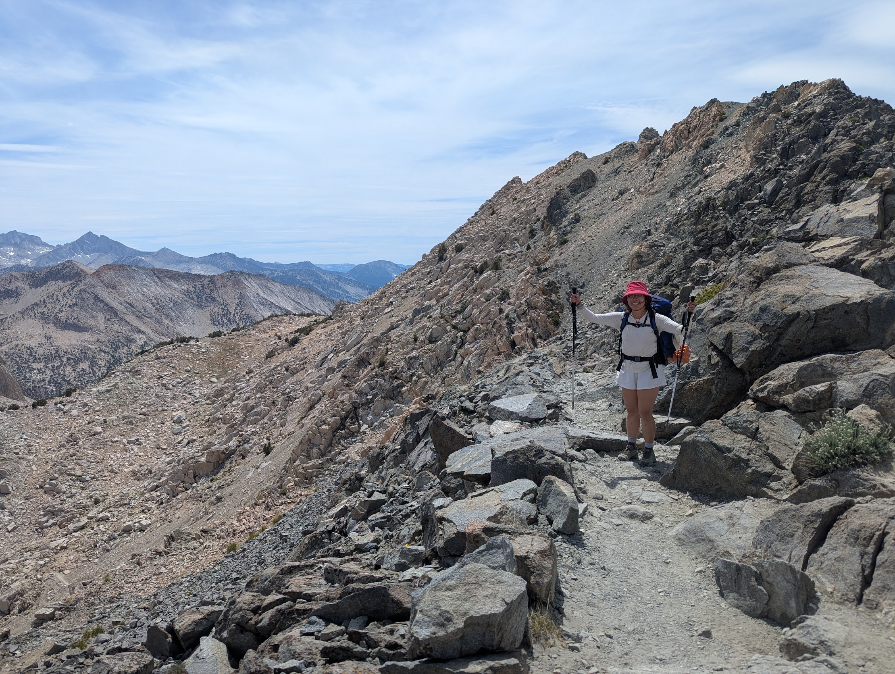
The top turned out to be an extremely narrow ridge with a sheer drop on either side. Elaine was unamused by this, and so started down the other side right away. Jer however took a break for a while and hung out on the top, where he felt a strange kinship with the jagged peaks on either side.
Meanwhile, two fighter jets – ostensibly from the China Lake Naval Air Weapons Station nearby – came roaring right overhead. The booms of their engines echoing around the granite basins below was awesome, and a fearsome reminder of the ubiquity of human engineering and intervention.
After a while longer spent basking in existential smallness, Jer threw his pack back on and started his way down to catch up with Elaine. We then continued to pass by hikers who appeared on the verge of death. Through-hikers, especially the PCTers, usually have a good idea of how far they have to go on a climb. This climb seemed special, however, or perhaps the relatively fresh NOBO JMTers had not yet found their Sierras stride. We passed many hikers who asked how far they had to go, and how tough the climb at the end was. Observing their exhausted demeanors, we did our best to give reassurance without lying outright.
As we descended further, we realized there weren’t many very good water sources on the south side, further exacerbating the difficulty of the climb. A few folks had given up and were setting up camp early for the day, saving the rest of the climb for the next. We passed by a pair of girls who were in good spirits, despite professing great fatigue.
“Are you hungry? I don’t want my baby girl to starve,” one was saying.
“I’m not really hungry, it’s more that I kind of just feel like… I’m dying,” replied the other, quite relatably.
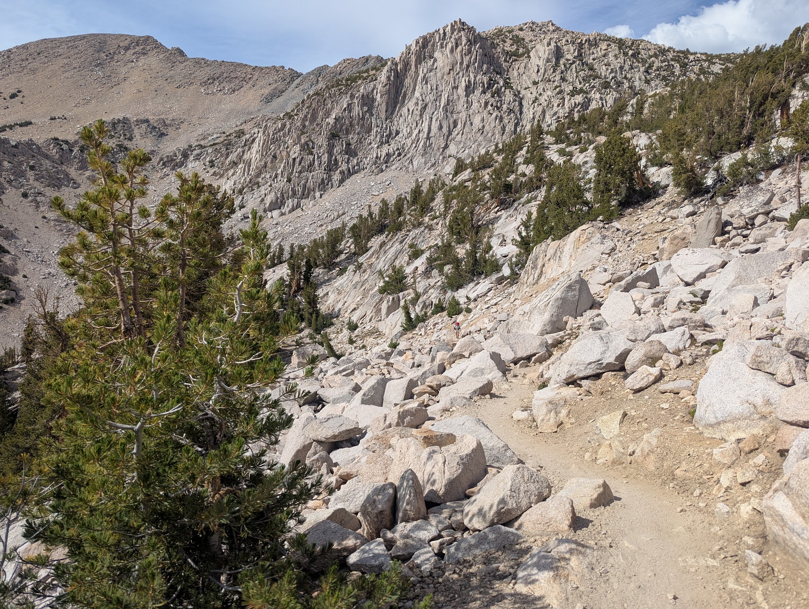
Knowing that Hallie and Jonathan were ahead of us, and that our goal for the day would put us well within striking distance of finishing on schedule, we pressed on. We passed high above Charlotte Lake, a huge sapphire jewel embedded in the forests beneath, but did not come directly to its shore, as the trail remained on a high ridge above. We were conserving water and getting quite thirsty, which did not put us in a good mood.
As the trail junctions became more frequent, we saw a funny bear warning sign posted on one:
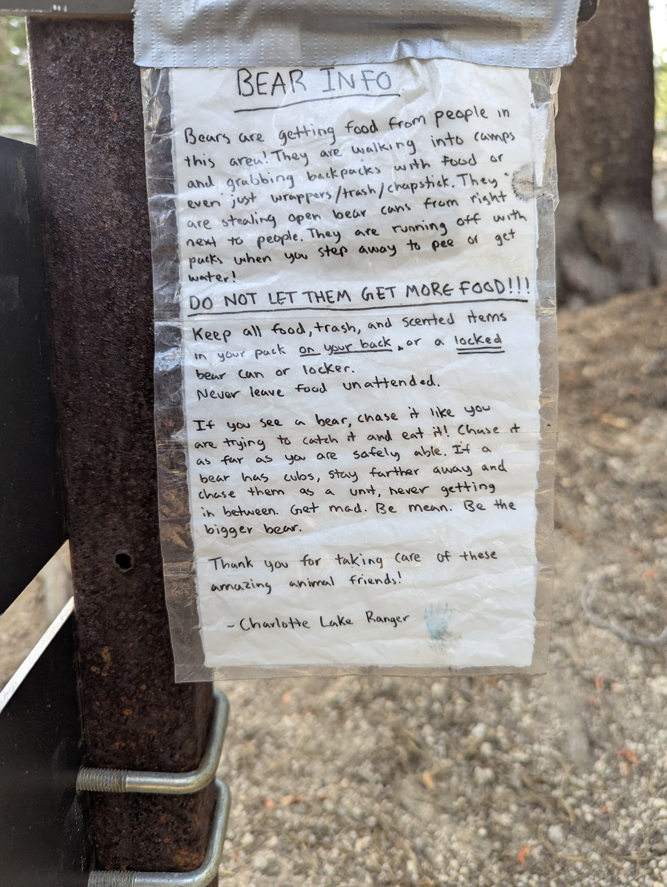
We took a snack break near the junction marker before starting down the final descent of the day. We passed by the Kearsarge Pass junction, a popular entry/exit and resupply point on the JMT, and by many more hikers in various states of struggle. At long last, we came to the Bubbs Creek junction, where we said a bittersweet goodbye to the JMT (oh, Forester Pass – only four miles away!)
We went a few minutes down the trail to find a site to set up camp for the night and collapsed, utterly exhausted. Jer’s back had had enough, and the inside arches of Elaine’s feet were finally aching quite badly. The fighting spirit that had been kindled at the Woods Creek suspension bridge was now all but used up.
At dinner that night we discovered the magic of instant mashed potatoes. Not only are they literally instant, but also pretty delicious when heavily doused with olive oil (and, in the future, perhaps, bacon bits?) Unfortunately, Elaine also tripped pretty hard over a tree root while getting water from the stream, landing badly and getting a painful bruise on the side of the knee. Clearly, the end couldn’t come soon enough.
Day 7: Bubbs Creek to Road’s End12.07 miles

On our final day, we had a single 12-mile descent down the Bubb’s Creek trail to get back to our car. You would think that by now we would be used to the tricks that one’s mind can play when it knows the end is near, but alas, no. The mind games on this day were particularly challenging. We practically ran down the trail, finishing by around 1:30pm, and yet it felt like a very long, monotonous lifetime.
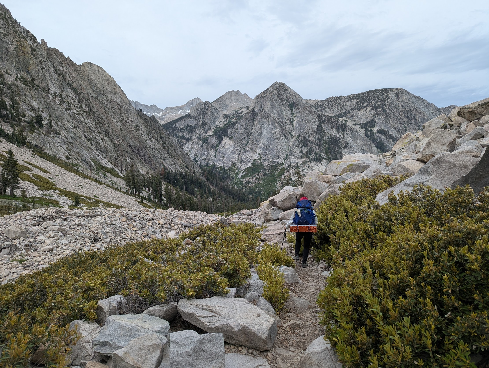
The views didn’t let up (we were simply too grumpy to appreciate them fully.) Our trail followed Bubbs Creek, frequently more like a raging river, as as it led from the high alpine ecosystems to humid redwoods-like fern groves and sandy, sage-strewn washes below…
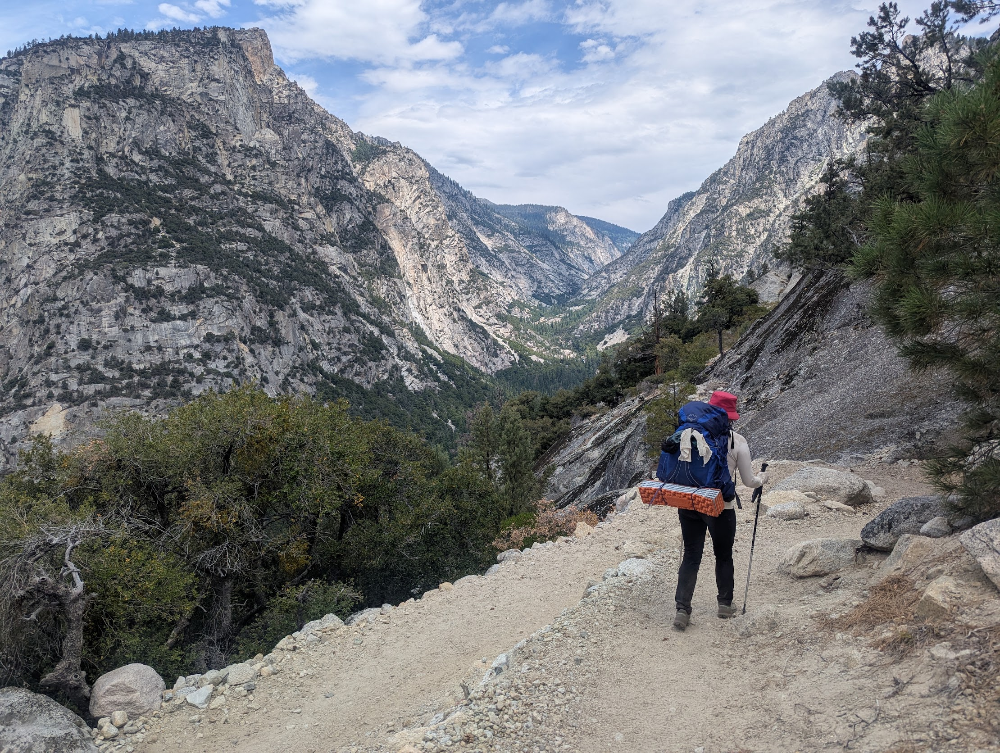
Passing by waterfalls…
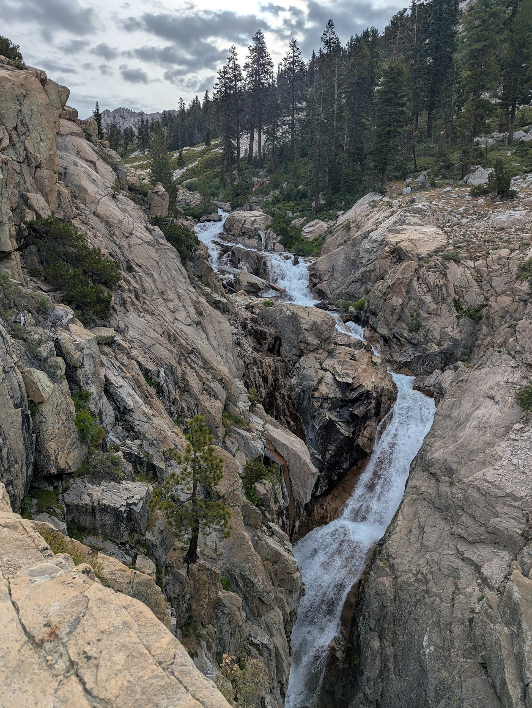
And through meadows covered in wildflowers…
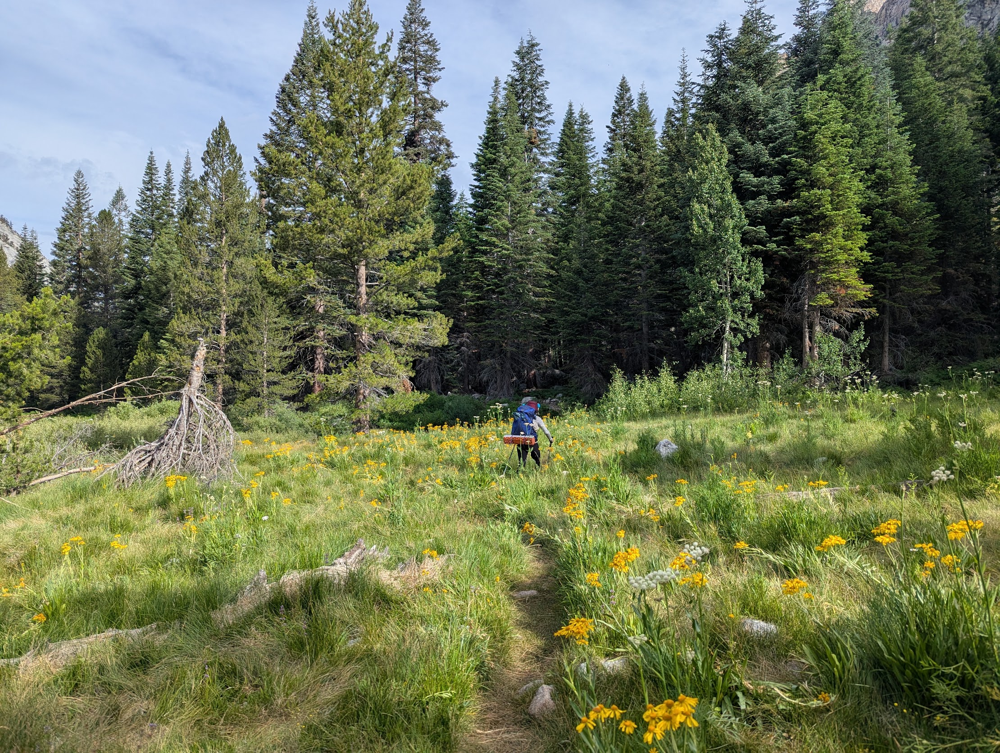
Before finally reaching the bottom, where, of course, there is a great bridge, to mark the destination!
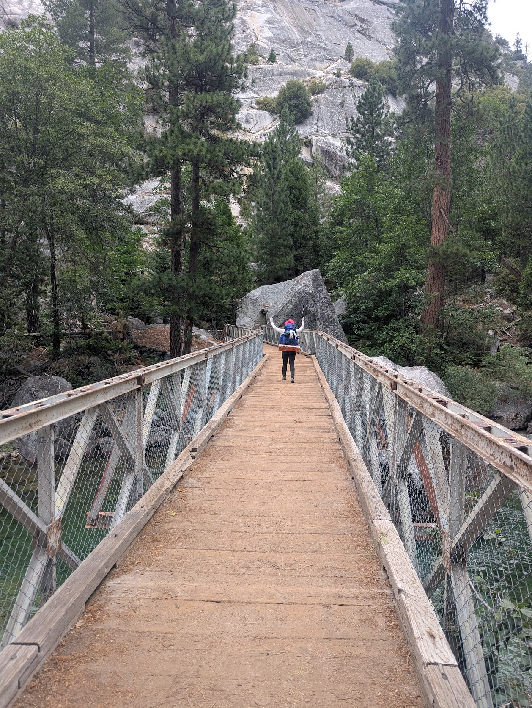
Even once we reached the bottom, there was still another two-mile walk to get back to the ranger station and parking lot. As always, the closer one gets to the end, the slower time seems to pass. We huffed and puffed our way past the strange and novel sight of the average national park visitor, the likes of whom now appeared all around us. Some of them seemed to be amused or alarmed by the sight of our grim faces and dirty bodies driving down the flat and sandy trail at top speed.
We finally saw the ranger station, where we collapsed and feverishly reported to the unsuspecting and slightly overwhelmed looking ranger on-duty (who was eating a particularly tasty looking bag of pita chips with hummus) the stories of our adventures, which have been here recounted. He mentioned a plan for a group of rangers, himself included, to go out in a couple weeks' time to the Simpson Meadow/Tehipite Valley area (roughly where we had been the first few days) to do some long-overdue trail maintenance. He already seemed a bit anxious about having to carry equipment out there. Our anecdotes perhaps did not serve to fortify his spirits further.
We traded stories with a few others before retreating to our car and bumbling our way out of the park, stopping in multiple places looking for a sink with soap to wash our hands and faces. We drove down the mountain and back to Fresno, where we stayed for the night after stuffing ourselves full of a Mexican feast.
Reflections
A 7-day food carry is heavy. Bring a million smartwater bottles — at least two per person — and just drink out of the filter ’til they’re empty. Bring one good filter, test and backwash before the trip, no backup. Always have extra toilet paper (or the surprisingly useful “shit kits.”) Stick to the time-tested lighter and carry backup matches. Liquid IV is good. BP pad thai not delicious and impossible to eat with a spoon. Bring camp shoes, for heaven’s sake. Toothbrush storage method needs work. Bring fewer bags for things. Do we really really need a tent tarp?
Despite the aches, pains, and various physical and mental injuries incurred over five years, we made it — and perfectly on time! We might be five years older, more tired, and stressed, but we could still survive a big-mile week in the Sierras. While chatting with the permit station ranger after our hike, he noted that the Middle Fork trail area is indeed extremely remote, and told us about the relative plethora of missing persons cases therein. This comment made Elaine doubly relieved (and a bit proud) to have survived. What doesn’t kill you might, one can hope, make you stronger!
Soon after we collapsed at the permit station, another group came in. They told the rangers they'd gotten completely snowed out of their planned traverse of Harrison Pass, and had to backtrack and reroute along Forester instead. Listening to them reinforced two things. First, no matter how hardcore you think you are, there are always a thousand people way more hardcore than you. However (secondly), you can only ever hike your own hike, and the only way that you'll get anywhere is on your own two damn feet. In this way the trail is a bit like doing anything hard ... like, perhaps, writing good papers? There's always someone writing a better paper than you, writing papers faster than you, or writing more papers than you. But you're only going to ever write a paper by doing it yourself, the hard way, one tiny little shitty step at a time (and sometimes back-tracking and going in circles.)
The JMT is basically an athletic event with a gorgeous backdrop. With clear trail and abundant water, it’s just a question of if you can exert yourself sufficiently to get from Point A to Point B, or C, and so on. True to form, we saw lots of thru-hikers with airpods in, hoods pulled up, and shades on, pushing big miles at a fast pace.
The less-traveled trails present a different challenge. A trail is not always there, and when it is, it’s not always designed in such a way to make the going reasonable, easy, or pleasant. Now, it’s a question of whether you can keep your nerve and make the decisions that are going to keep you alive, even if that means not going very far at all (or much farther than you’d like.)
Long treks sort of turn people into pilgrims. You start off burdened with the possessions and considerations of your worldly life. But the trail is a jealous God, and its unrelenting requirements — grueling passes, hard fords, and resupply targets — strip you of those burdens. PCTers in particular stand out from a (metaphorical) mile away. The folks doing more remote adventures are less like pilgrims and more like monks, content to let the wind blow them where it may, even if that means far off-course (which seems just fine, as they tend to eschew the well-traveled paths.) There’s no better or worse way, no harder or easier way. The Sierras kick your butt no matter who you are.
Jer made an offhand joke at some point earlyish on: “So, what if a leopard appeared in your path on your way out of the woods, stopped you, and told you that the only way out was to turn back and pass through hell?” Indeed, this journey seems in more ways than one to resemble the opening stanzas of a very well-known tale of a pilgrim, a wanderer, and a very long walk that begins in the midst of one’s life, in a darkened wood, where the way forward is not clear.
“Nel mezzo del cammin di nostra vita … “